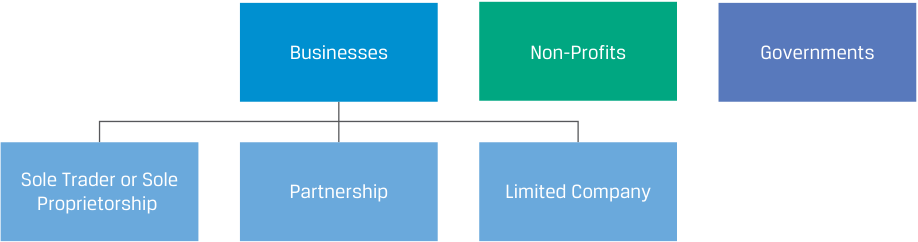
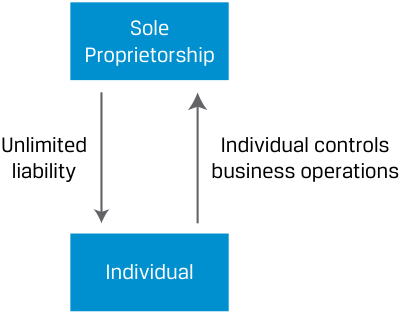
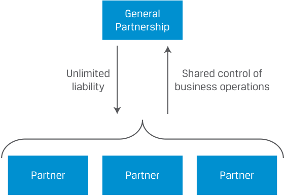
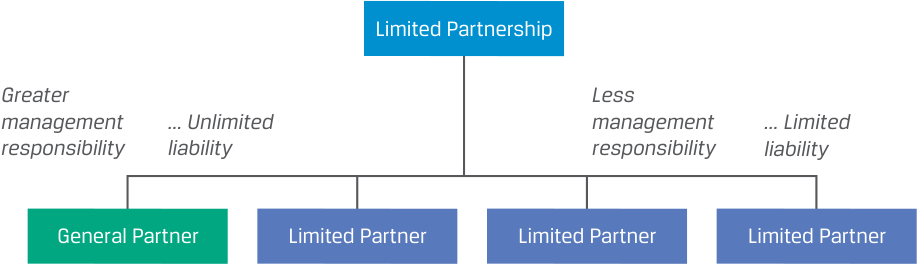
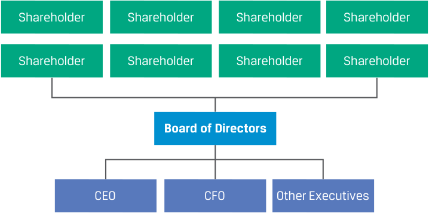
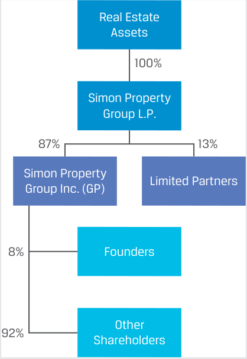
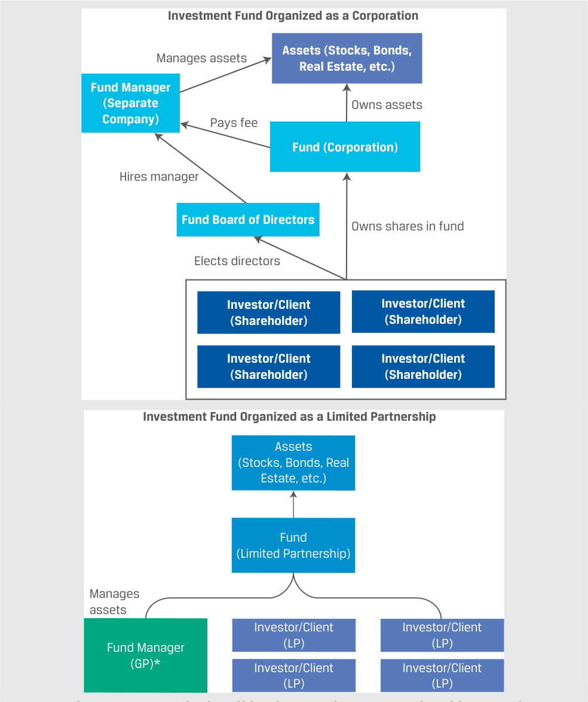

[Toàn Chương] LM01 — Learning Module 1 Organizational Forms, Corporate Issuer Features, and Ownership
Volume 3: Corporate Issuers
Learning Module 1 Organizational Forms, Corporate Issuer Features, and Ownership
Part 1/3: Introduction (PDF Pages 11–22)
Tập 3: Tổ chức phát hành doanh nghiệp (Corporate Issuers)
Học phần 1: Các hình thức tổ chức doanh nghiệp, đặc điểm của tổ chức phát hành doanh nghiệp và quyền sở hữu (Organizational Forms, Corporate Issuer Features, and Ownership)
Phần 1/3: Giới thiệu (Introduction) (Trang PDF 11–22)
L E A R N I N G M O D U L E
H Ọ C P H Ầ N (L E A R N I N G M O D U L E)
1
1
Organizational Forms, Corporate Issuer Features, and Ownership
Các hình thức tổ chức doanh nghiệp, đặc điểm của tổ chức phát hành doanh nghiệp và quyền sở hữu (Organizational Forms, Corporate Issuer Features, and Ownership)
LEARNING OUTCOMES
MỤC TIÊU HỌC TẬP (LEARNING OUTCOMES)
Mastery The candidate should be able to:
Thành thạo – Ứng viên cần có khả năng:
compare the organizational forms of businesses describe key features of corporate issuers compare publicly and privately owned corporate issuers
- So sánh các hình thức tổ chức của doanh nghiệp (compare the organizational forms of businesses)
- Mô tả các đặc điểm chính của tổ chức phát hành doanh nghiệp (describe key features of corporate issuers)
- So sánh các tổ chức phát hành doanh nghiệp thuộc sở hữu đại chúng và sở hữu tư nhân (compare publicly and privately owned corporate issuers)
INTRODUCTION
GIỚI THIỆU (INTRODUCTION)
1
1
This learning module introduces the Corporate Issuers topic area, which covers the fundamentals of how corporations are organized and governed and how they make operating, investing, and financing decisions. Financial analysts must have a strong understanding of corporate issuers because they are the largest type of issuer in financial markets globally; many analysts are focused entirely on analyzing and investing in their debt or equity instruments. In the first lesson of this module, we describe and compare the legal organizational forms of businesses, emphasizing their similarities and differences and important implications for investors. The second lesson focuses on the corporate organizational form and its key features, such as the separation of ownership and management, limited shareholder liability, access to financing, and tax issues. In the final lesson, we compare privately held and public corporate issuers, including the mechanisms of how corporate issuers go public and are taken private.
Học phần này giới thiệu chủ đề Tổ chức phát hành doanh nghiệp (Corporate Issuers), bao gồm các kiến thức nền tảng về cách thức các công ty cổ phần (corporations) được tổ chức và quản trị cũng như cách họ đưa ra các quyết định hoạt động (operating), đầu tư (investing) và tài trợ (financing). Các chuyên gia phân tích tài chính phải có sự hiểu biết vững chắc về các tổ chức phát hành doanh nghiệp bởi vì họ là loại hình tổ chức phát hành lớn nhất trên các thị trường tài chính toàn cầu; nhiều chuyên gia phân tích tập trung hoàn toàn vào việc phân tích và đầu tư vào các công cụ nợ (debt instruments) hoặc vốn chủ sở hữu (equity instruments) của các tổ chức này. Trong bài học đầu tiên của học phần này, chúng ta mô tả và so sánh các hình thức tổ chức pháp lý của doanh nghiệp (legal organizational forms of businesses), nhấn mạnh vào những điểm tương đồng và khác biệt cũng như các hàm ý quan trọng đối với nhà đầu tư. Bài học thứ hai tập trung vào hình thức tổ chức công ty cổ phần (corporate organizational form) và các đặc điểm chính của nó, chẳng hạn như sự tách biệt giữa quyền sở hữu và quyền quản lý (separation of ownership and management), trách nhiệm hữu hạn của cổ đông (limited shareholder liability), khả năng tiếp cận nguồn vốn (access to financing) và các vấn đề về thuế (tax issues). Trong bài học cuối cùng, chúng ta so sánh các tổ chức phát hành doanh nghiệp tư nhân (privately held corporate issuers) và đại chúng (public corporate issuers), bao gồm các cơ chế giúp tổ chức phát hành doanh nghiệp niêm yết đại chúng (go public) và chuyển thành công ty tư nhân (taken private).
LEARNING MODULE OVERVIEW
TỔNG QUAN HỌC PHẦN (LEARNING MODULE OVERVIEW)
-
Businesses are legally organized as sole proprietorships, partnerships, or limited companies, which differ by several attributes, including legal identity, owner–manager relations, owner liability, taxation, and access to financing. In practice, organizational forms are jurisdiction specific; our focus is on common characteristics.
-
The limited company form, often known as the corporation, offers advantages over the other two forms by improving the ability to raise capital, through limited shareholder liability, the separation of
-
Doanh nghiệp được tổ chức hợp pháp dưới dạng doanh nghiệp tư nhân (sole proprietorships), công ty hợp danh (partnerships), hoặc công ty trách nhiệm hữu hạn / công ty cổ phần (limited companies), khác nhau ở một số thuộc tính bao gồm tư cách pháp nhân (legal identity), mối quan hệ giữa chủ sở hữu và người quản lý (owner–manager relations), trách nhiệm pháp lý của chủ sở hữu (owner liability), thuế (taxation) và khả năng tiếp cận nguồn vốn (access to financing). Trên thực tế, các hình thức tổ chức mang tính đặc thù theo từng khu vực pháp lý; trọng tâm của chúng ta là những đặc điểm chung.
-
Hình thức công ty trách nhiệm hữu hạn (limited company), thường được gọi là công ty cổ phần (corporation), mang lại những lợi thế vượt trội so với hai hình thức còn lại bằng cách cải thiện khả năng huy động vốn thông qua trách nhiệm hữu hạn của cổ đông (limited shareholder liability), sự tách biệt giữa
ownership and management, and fewer restrictions on the number of owners and transferring ownership. In most jurisdictions, there are two types of limited companies: private limited companies and public limited companies.
quyền sở hữu và quyền quản lý, cùng với ít hạn chế hơn đối với số lượng chủ sở hữu và việc chuyển nhượng quyền sở hữu. Tại hầu hết các khu vực pháp lý, có hai loại hình công ty trách nhiệm hữu hạn: công ty trách nhiệm hữu hạn tư nhân (private limited companies) và công ty trách nhiệm hữu hạn đại chúng / công ty cổ phần (public limited companies).
-
Private limited companies tend to have some restrictions on ownership but pass-through taxation like partnerships. Public limited companies have no ownership restrictions, but their income can be taxed at both the company and shareholder level. While public limited companies do not have to go public by selling their shares on an exchange, it is this form that is most suitable for becoming a publicly traded company.
-
Corporate shareholders elect a board of directors that appoints executive management to operate the company. Shareholders effect change primarily through their ability to replace directors.
-
Corporations that seek external financing in financial markets, known as corporate issuers, can utilize either public or private markets, and these choices have implications for the liquidity and price transparency of the company’s securities, as well as its ability to raise future financing and the degree to which it must disclose information.
-
Corporate issuers can change their status from privately held to publicly traded (or “listed”) through a variety of mechanisms, including an initial public offering. Publicly traded issuers can be taken private through several mechanisms, including a leveraged buyout.
-
Shareholders of corporate issuers include not only individuals and institutional investors, such as pension funds and mutual funds, but also governments, non-profits, and other corporations.
-
Các công ty trách nhiệm hữu hạn tư nhân (private limited companies) thường có một số hạn chế về quyền sở hữu nhưng được áp dụng cơ chế thuế chuyển tiếp (pass-through taxation) tương tự như công ty hợp danh. Các công ty trách nhiệm hữu hạn đại chúng (public limited companies) không có hạn chế về quyền sở hữu, nhưng thu nhập của chúng có thể bị đánh thuế ở cả cấp độ công ty và cấp độ cổ đông. Mặc dù các công ty trách nhiệm hữu hạn đại chúng không bắt buộc phải trở thành công ty đại chúng niêm yết thông qua việc bán cổ phiếu trên sàn giao dịch, nhưng đây chính là hình thức phù hợp nhất để trở thành một công ty giao dịch đại chúng (publicly traded company).
-
Cổ đông của công ty cổ phần bầu ra hội đồng quản trị (board of directors), và hội đồng quản trị sẽ bổ nhiệm ban điều hành (executive management) để vận hành công ty. Cổ đông tạo ra sự thay đổi chủ yếu thông qua khả năng thay thế các thành viên hội đồng quản trị (directors).
-
Các công ty cổ phần tìm kiếm nguồn tài trợ bên ngoài trên thị trường tài chính, được gọi là các tổ chức phát hành doanh nghiệp (corporate issuers), có thể sử dụng thị trường đại chúng (public markets) hoặc thị trường tư nhân (private markets), và những lựa chọn này có hàm ý quan trọng đối với tính thanh khoản (liquidity) và tính minh bạch về giá (price transparency) của chứng khoán công ty, cũng như khả năng huy động vốn trong tương lai và mức độ công bố thông tin bắt buộc.
-
Các tổ chức phát hành doanh nghiệp có thể thay đổi trạng thái từ công ty tư nhân (privately held) sang công ty giao dịch đại chúng (hay “niêm yết” – listed) thông qua nhiều cơ chế khác nhau, bao gồm phát hành cổ phiếu lần đầu ra công chúng (initial public offering – IPO). Các tổ chức phát hành đang giao dịch đại chúng cũng có thể được chuyển thành công ty tư nhân (taken private) thông qua một số cơ chế, bao gồm giao dịch mua lại bằng vốn vay (leveraged buyout – LBO).
-
Cổ đông của các tổ chức phát hành doanh nghiệp không chỉ bao gồm các nhà đầu tư cá nhân và nhà đầu tư tổ chức (institutional investors), chẳng hạn như quỹ hưu trí (pension funds) và quỹ tương hỗ (mutual funds), mà còn bao gồm cả chính phủ, các tổ chức phi lợi nhuận (non-profits) và các công ty cổ phần khác.
LEARNING MODULE SELF-ASSESSMENT
TỰ ĐÁNH GIÁ HỌC PHẦN (LEARNING MODULE SELF-ASSESSMENT)
These initial questions are intended to help you gauge your current level of understanding of this topic.
- Fill in the two blanks below using the two of the following four possible terms:
- Sole proprietorship
Các câu hỏi ban đầu này nhằm giúp bạn tự đánh giá mức độ hiểu biết hiện tại của mình về chủ đề này.
General partnership
Limited partnership
- Điền vào hai chỗ trống bên dưới bằng cách sử dụng hai trong bốn thuật ngữ sau:
- Doanh nghiệp tư nhân (Sole proprietorship)
- Công ty hợp danh thông thường (General partnership)
- Công ty hợp danh hữu hạn (Limited partnership)
- Công ty trách nhiệm hữu hạn đại chúng / Công ty cổ phần (Public limited company / corporation)
Public limited company (corporation)
A ___ likely has the greatest access to financing, while a ___ likely has the least access to financing.
Một ___ có khả năng tiếp cận nguồn vốn lớn nhất, trong khi một ___ có khả năng tiếp cận nguồn vốn thấp nhất.
Solution:
Lời giải:
A public limited company (corporation) likely has the greatest access to financing, while a sole proprietorship likely has the least access to financing. A primary difference across organizational forms is access to financing to fund investments. The sole proprietorship is limited to its individual owner’s ability to invest her own money and borrowing capacity as an individual. At
Một công ty trách nhiệm hữu hạn đại chúng / công ty cổ phần (public limited company / corporation) có khả năng tiếp cận nguồn vốn lớn nhất, trong khi một doanh nghiệp tư nhân (sole proprietorship) có khả năng tiếp cận nguồn vốn thấp nhất. Sự khác biệt chính giữa các hình thức tổ chức doanh nghiệp là khả năng tiếp cận nguồn vốn để tài trợ cho các khoản đầu tư. Doanh nghiệp tư nhân bị giới hạn ở khả năng tự bỏ vốn của cá nhân chủ sở hữu và khả năng vay nợ với tư cách cá nhân của người đó. Ở
| the other end of the spectrum, a public limited company can access a broad array of outside investors by issuing debt and/or equity securities. |
|---|
| 2. Which of the following organizational forms provides for the_least_owner liability of business debts? |
| A.General partnership |
| B.Private limited company |
| C.Sole proprietorship Solution: |
| B is correct. In both the sole proprietorship and general partnership forms of organization, the owners are personally liable for all debts assumed by the company. In a private limited company, owner (shareholder) liability is limited to the value of their ownership stake. |
| 3. Voting rights of a corporate issuer’s shareholders generally refer to which of the following? |
| A.The ability of the corporation to vote in political elections |
| h B.The direct ability to elect a chief executive officer of the company |
| h fi C.The ability to elect members of the company’s board of directors Solution: |
| C is correct. The voting rights of shareholders generally allow them to elect board members as well as vote on other matters outlined in the company’s charter. The board of directors has the responsibility to hire (or retain) the company’s chief executive officer (CEO); thus, voting rights do not give shareholders the_direct_ability to hire the CEO. Despite the status of a corpo- ration as a distinct legal entity, this status does not provide voting rights in political elections. |
| 4. Explain how the following situation reflects double taxation on the corpo- rate organizational form: The corporation pays a 21% tax rate on pre-tax income of USD100 million. The corporation distributes USD10 million to its shareholders. Individuals pay a 20% tax on dividend income. Solution: |
| The corporation pays USD21 million in income taxes at the corporate level and, collectively, the shareholders pay USD2 million in individual income taxes on dividends received. In total, USD23 million in income taxes were paid on the pre-tax income of USD100 million. Effectively, the USD10 mil- lion paid as dividends was taxed twice, first as business income and again as personal income. |
| 5. True or false: The term “public” for a public corporate issuer means that the company is wholly or partially owned by a government. A.True |
| B.False Solution: |
| B is correct. The statement is false because while a public corporate issuer could be owned partly by a government, this condition is not necessary. The term “public” refers only to the fact that a company’s equity securities are traded on an exchange and thus are available for investment bythepublic. |
phía bên kia của phổ tổ chức, một công ty trách nhiệm hữu hạn đại chúng (public limited company) có thể tiếp cận một lượng lớn các nhà đầu tư bên ngoài bằng cách phát hành chứng khoán nợ và/hoặc chứng khoán vốn chủ sở hữu.
- Hình thức tổ chức nào sau đây quy định trách nhiệm pháp lý của chủ sở hữu đối với các khoản nợ kinh doanh là thấp nhất? - A. Công ty hợp danh thông thường (General partnership) - B. Công ty trách nhiệm hữu hạn tư nhân (Private limited company) - C. Doanh nghiệp tư nhân (Sole proprietorship)
Lời giải:
B là đáp án đúng. Trong cả hai hình thức tổ chức doanh nghiệp tư nhân và công ty hợp danh thông thường, các chủ sở hữu đều phải chịu trách nhiệm cá nhân đối với toàn bộ các khoản nợ mà công ty gánh chịu. Trong một công ty trách nhiệm hữu hạn tư nhân (private limited company), trách nhiệm pháp lý của chủ sở hữu (cổ đông) được giới hạn ở giá trị phần vốn góp sở hữu của họ.
- Quyền biểu quyết (voting rights) của cổ đông tại một tổ chức phát hành doanh nghiệp thường đề cập đến điều nào sau đây? - A. Khả năng công ty cổ phần bỏ phiếu trong các cuộc bầu cử chính trị - B. Khả năng trực tiếp bầu chọn giám đốc điều hành (CEO) của công ty - C. Khả năng bầu chọn các thành viên hội đồng quản trị của công ty
Lời giải:
C là đáp án đúng. Quyền biểu quyết của cổ đông thường cho phép họ bầu các thành viên hội đồng quản trị (board members) cũng như bỏ phiếu về các vấn đề khác được quy định trong điều lệ công ty (company’s charter). Hội đồng quản trị có trách nhiệm thuê (hoặc giữ lại) giám đốc điều hành (Chief Executive Officer – CEO) của công ty; do đó, quyền biểu quyết không trao cho cổ đông khả năng trực tiếp thuê CEO. Mặc dù công ty cổ phần có tư cách là một thực thể pháp lý riêng biệt, tư cách này không mang lại quyền bỏ phiếu trong các cuộc bầu cử chính trị.
- Hãy giải thích tình huống sau đây phản ánh việc đánh thuế hai lần (double taxation) đối với hình thức tổ chức công ty cổ phần như thế nào: Công ty cổ phần nộp thuế suất 21% trên thu nhập trước thuế là 100 triệu USD. Công ty phân phối 10 triệu USD cho các cổ đông. Các cá nhân nộp thuế 20% trên thu nhập từ cổ tức (dividend income).
Lời giải:
Công ty cổ phần nộp 21 triệu USD thuế thu nhập ở cấp độ doanh nghiệp và, tính chung, các cổ đông nộp 2 triệu USD thuế thu nhập cá nhân trên số cổ tức nhận được. Tổng cộng, 23 triệu USD thuế thu nhập đã được nộp trên khoản thu nhập trước thuế 100 triệu USD. Trên thực tế, khoản 10 triệu USD trả dưới dạng cổ tức đã bị đánh thuế hai lần: lần thứ nhất với tư cách là thu nhập doanh nghiệp và lần thứ hai với tư cách là thu nhập cá nhân.
- Đúng hay Sai: Thuật ngữ “đại chúng” (public) đối với một tổ chức phát hành doanh nghiệp đại chúng có nghĩa là công ty đó thuộc sở hữu toàn bộ hoặc một phần của chính phủ. - A. Đúng - B. Sai
Lời giải:
B là đáp án đúng. Phát biểu này sai vì mặc dù một tổ chức phát hành doanh nghiệp đại chúng có thể thuộc sở hữu một phần của chính phủ, nhưng điều kiện này là không bắt buộc. Thuật ngữ “đại chúng” (public) chỉ đề cập đến việc chứng khoán vốn chủ sở hữu của công ty được giao dịch trên một sàn giao dịch và do đó công chúng (the public) có thể tiếp cận để đầu tư.
6. Fill in the blanks:
- Điền vào chỗ trống:
A public company’s shares can be exchanged on a ____, while a private company’s shares suffer from a lack of price
Cổ phiếu của một công ty đại chúng có thể được trao đổi trên một __, trong khi cổ phiếu của một công ty tư nhân chịu sự thiếu hụt về __ giá.
________.
Lời giải:
Solution:
Cổ phiếu của một công ty đại chúng có thể được trao đổi trên một sàn giao dịch chứng khoán (stock exchange), trong khi cổ phiếu của một công ty tư nhân chịu sự thiếu hụt về tính minh bạch (transparency) giá.
A public company’s shares can be exchanged on a stock exchange, while a private company’s shares suffer from a lack of price transparency.
2
2
CÁC HÌNH THỨC TỔ CHỨC CỦA DOANH NGHIỆP (ORGANIZATIONAL FORMS OF BUSINESSES)
ORGANIZATIONAL FORMS OF BUSINESSES
compare the organizational forms of businesses
- So sánh các hình thức tổ chức của doanh nghiệp (compare the organizational forms of businesses)
In most market economies, there are three general types of organization, each with distinct purposes, stakeholders, and governing legal frameworks: for-profit organizations, known as businesses or companies ; not-for-profit non-governmental organizations, or simply non-profits; and governments.
Trong hầu hết các nền kinh tế thị trường, có ba loại hình tổ chức chung, mỗi loại có mục đích, các bên liên quan (stakeholders) và khung pháp lý điều chỉnh riêng biệt: các tổ chức vì lợi nhuận (for-profit organizations), được gọi là doanh nghiệp (businesses) hoặc công ty (companies); các tổ chức phi chính phủ không vì lợi nhuận (not-for-profit non-governmental organizations), hay gọi đơn giản là tổ chức phi lợi nhuận (non-profits); và chính phủ (governments).
The focus of this and subsequent modules are businesses, because financial analysts are important participants in the markets for their financial resources. However, non-profits and governments often are investors in businesses, which will be covered in later lessons. Governments as issuers of debt and other securities are covered in modules on fixed income.
Trọng tâm của học phần này và các học phần tiếp theo là các doanh nghiệp, bởi vì các chuyên gia phân tích tài chính là những người tham gia quan trọng trên các thị trường cung cấp nguồn lực tài chính cho doanh nghiệp. Tuy nhiên, các tổ chức phi lợi nhuận và chính phủ thường là những nhà đầu tư vào các doanh nghiệp – nội dung này sẽ được đề cập trong các bài học sau. Chính phủ với tư cách là tổ chức phát hành nợ và các chứng khoán khác được đề cập trong các học phần về Thu nhập cố định (Fixed Income).
Organizational Forms of Businesses
Các hình thức tổ chức của doanh nghiệp (Organizational Forms of Businesses)
Business owners choose a legal organizational form that defines how returns, risks, and ownership and operational responsibilities are distributed. There are three general forms common to most jurisdictions.
Chủ sở hữu doanh nghiệp lựa chọn một hình thức tổ chức (organizational form) pháp lý nhằm xác định cách thức phân bổ tỷ suất sinh lợi (returns), rủi ro (risks), cũng như trách nhiệm sở hữu và vận hành (ownership and operational responsibilities). Có ba hình thức chung phổ biến ở hầu hết các khu vực pháp lý.
Exhibit 1: Organizational Forms of Businesses
Bảng 1 (Exhibit 1): Các hình thức tổ chức của doanh nghiệp (Organizational Forms of Businesses)

Chú thích hình ảnh: Các loại hình tổ chức bao gồm: Doanh nghiệp (Businesses), Tổ chức phi lợi nhuận (Non-Profits) và Chính phủ (Governments). Trong đó, Doanh nghiệp được chia thành 3 hình thức: Hộ kinh doanh cá thể hoặc Doanh nghiệp tư nhân (Sole Trader or Sole Proprietorship), Công ty hợp danh (Partnership), và Công ty trách nhiệm hữu hạn / Công ty cổ phần (Limited Company).
The organizational forms of businesses differ by several attributes:
Các hình thức tổ chức của doanh nghiệp khác nhau ở một số thuộc tính:
-
Legal identity: Whether the business is legally considered a separate entity or person apart from its owners
-
Owner–manager relationship: The relationship between the owner(s) of the business and those who manage the business
-
Tư cách pháp nhân (Legal identity): Liệu doanh nghiệp có được pháp luật coi là một thực thể hoặc pháp nhân riêng biệt tách rời khỏi các chủ sở hữu của nó hay không.
-
Mối quan hệ giữa chủ sở hữu và người quản lý (Owner–manager relationship): Mối quan hệ giữa (các) chủ sở hữu của doanh nghiệp và những người trực tiếp quản lý doanh nghiệp.
-
Owner liability: The extent to which owners are personally legally liable for actions or debts undertaken by the business
-
Taxation: The treatment of business profits or losses for tax purposes
-
Access to financing: The ability to raise capital to fund expansion and distribute risks
-
Trách nhiệm pháp lý của chủ sở hữu (Owner liability): Mức độ mà các chủ sở hữu phải chịu trách nhiệm pháp lý cá nhân đối với các hành vi hoặc khoản nợ do doanh nghiệp thực hiện.
-
Thuế (Taxation): Cách thức xử lý lợi nhuận hoặc khoản lỗ của doanh nghiệp cho mục đích tính thuế.
-
Khả năng tiếp cận nguồn vốn (Access to financing): Khả năng huy động vốn để tài trợ cho việc mở rộng quy mô và phân tán rủi ro.
Every jurisdiction has its own specific versions and variants of organizational forms, including different names for them. We are not attempting to provide an exhaustive treatment of jurisdictional specifics; rather, we provide the general and common attributes that analysts must know to ask the right questions in their own research on specific investment candidates and business cases.
Mỗi khu vực pháp lý đều có các phiên bản và biến thể cụ thể riêng về hình thức tổ chức doanh nghiệp, bao gồm cả những tên gọi khác nhau cho chúng. Chúng ta không cố gắng trình bày một cách toàn diện mọi chi tiết đặc thù của từng khu vực pháp lý; thay vào đó, chúng ta cung cấp các thuộc tính chung và phổ biến mà các chuyên gia phân tích cần phải biết để đặt ra những câu hỏi đúng đắn trong quá trình nghiên cứu các cơ hội đầu tư và tình huống kinh doanh cụ thể.
Sole Trader or Proprietorship
Hộ kinh doanh cá thể hoặc Doanh nghiệp tư nhân (Sole Trader or Proprietorship)
The simplest organizational form is the sole trader or proprietorship, shown in Exhibit 2. In a sole proprietorship, the owner provides the capital needed to start and operate the business and retains full control over management, while participating fully in the firm’s financial returns and risks. In some jurisdictions, this form is the default form, requiring no formal legal registration, and is dissolved when the owner ceases business activity or dies.
Hình thức tổ chức đơn giản nhất là hộ kinh doanh cá thể hoặc doanh nghiệp tư nhân (sole trader or proprietorship), được minh họa trong Bảng 2 (Exhibit 2). Trong một doanh nghiệp tư nhân, chủ sở hữu cung cấp số vốn cần thiết để khởi sự và vận hành doanh nghiệp, đồng thời nắm toàn quyền kiểm soát việc quản lý, cũng như hưởng toàn bộ lợi nhuận tài chính và gánh chịu toàn bộ rủi ro của doanh nghiệp. Ở một số khu vực pháp lý, đây là hình thức mặc định, không yêu cầu đăng ký pháp lý chính thức, và sẽ giải thể khi chủ sở hữu chấm dứt hoạt động kinh doanh hoặc qua đời.
Exhibit 2: Sole Trader or Proprietorship
Bảng 2 (Exhibit 2): Hộ kinh doanh cá thể hoặc Doanh nghiệp tư nhân (Sole Trader or Proprietorship)

Chú thích hình ảnh: Doanh nghiệp tư nhân (Sole Proprietorship) gắn liền với Cá nhân (Individual): Cá nhân chịu trách nhiệm vô hạn (Unlimited liability) và kiểm soát toàn bộ hoạt động kinh doanh (Individual controls business operations).
An example of a sole proprietorship is a family-owned business. The individual owner usually uses savings or a personal loan to start the business and to run daily operations and retains full management control. The owner retains all return (profits), which is taxed as personal income, and is personally responsible for losses and obligations of the business, such as debts.
Một ví dụ về doanh nghiệp tư nhân là doanh nghiệp do gia đình tự làm chủ. Chủ sở hữu cá nhân thường sử dụng tiền tiết kiệm hoặc một khoản vay cá nhân để khởi nghiệp và điều hành các hoạt động hàng ngày, đồng thời nắm toàn quyền kiểm soát quản lý. Chủ sở hữu giữ lại toàn bộ lợi nhuận (returns/profits), khoản lợi nhuận này bị đánh thuế như thu nhập cá nhân (personal income), và chủ sở hữu phải chịu trách nhiệm cá nhân đối với các khoản lỗ và nghĩa vụ của doanh nghiệp, chẳng hạn như các khoản nợ.
While sole proprietorships comprise the largest number of businesses in most market economies and are preferred by small business owners for their simplicity and flexibility, their growth is constrained by an owner’s ability to access financing, assume risk, and serve as the sole owner.
Mặc dù doanh nghiệp tư nhân chiếm số lượng doanh nghiệp lớn nhất trong hầu hết các nền kinh tế thị trường và được các chủ doanh nghiệp nhỏ ưa chuộng vì tính đơn giản và linh hoạt, nhưng sự tăng trưởng của chúng bị hạn chế bởi khả năng tiếp cận nguồn vốn, khả năng gánh chịu rủi ro và việc chỉ có một chủ sở hữu duy nhất.
Partnerships
Công ty hợp danh (Partnerships)
Partnerships allow multiple owners to pool their resources and share business risk and return. There are three common types in most jurisdictions: general partnerships, limited partnerships, and limited liability partnerships.
Công ty hợp danh (partnerships) cho phép nhiều chủ sở hữu góp chung nguồn lực của họ và cùng chia sẻ rủi ro cũng như lợi nhuận kinh doanh. Có ba loại hình phổ biến ở hầu hết các khu vực pháp lý: công ty hợp danh thông thường (general partnerships), công ty hợp danh hữu hạn (limited partnerships), và công ty hợp danh trách nhiệm hữu hạn (limited liability partnerships).
A general partnership , shown in Exhibit 3, has two or more owners called partners or general partners (GPs) . General partnerships are like sole proprietorships, with the important distinction that they allow for additional resources to be brought into the
Một công ty hợp danh thông thường (general partnership), được minh họa trong Bảng 3 (Exhibit 3), có từ hai chủ sở hữu trở lên được gọi là các thành viên hợp danh hay thành viên hợp danh thông thường (general partners – GPs). Công ty hợp danh thông thường tương tự như doanh nghiệp tư nhân, nhưng có điểm khác biệt quan trọng là cho phép huy động thêm các nguồn lực vào
business by the additional owners, along with the sharing of business risk and return. Partnerships are often formed and governed by a written partnership agreement that outlines specific partner roles and responsibilities and the sharing of profits, losses, and obligations. However, a written agreement is not required; partnerships can be formed verbally or incidentally through actions.
doanh nghiệp từ những chủ sở hữu bổ sung, đi kèm với việc chia sẻ rủi ro và lợi nhuận kinh doanh. Các công ty hợp danh thường được thành lập và điều chỉnh bởi một thỏa thuận hợp danh bằng văn bản (written partnership agreement), trong đó nêu rõ vai trò và trách nhiệm cụ thể của từng thành viên hợp danh cũng như cách thức chia sẻ lợi nhuận, thua lỗ và các nghĩa vụ. Tuy nhiên, một thỏa thuận bằng văn bản là không bắt buộc; công ty hợp danh có thể được hình thành bằng lời nói hoặc ngẫu nhiên thông qua các hành động hợp tác.
Exhibit 3: General Partnership
Bảng 3 (Exhibit 3): Công ty hợp danh thông thường (General Partnership)

Chú thích hình ảnh: Công ty hợp danh thông thường (General Partnership) gồm các Thành viên hợp danh (Partner): Cùng chịu trách nhiệm vô hạn (Unlimited liability) và cùng chia sẻ quyền kiểm soát hoạt động kinh doanh (Shared control of business operations).
Examples of general partnerships include service businesses, such as builders or contractors, and joint ventures of multiple businesses. Such businesses have a small number of partners who usually contribute equal or similar amounts of capital. The partners bring complementary expertise, such as expertise in business development, financial acumen, operations, or legal/compliance, and they share responsibility in running the business. All profits, losses, and risks of the business are collectively assumed and shared by the partners. If one partner is unable to pay his share of the business’s debts, the remaining partners are fully liable. As with a sole proprietorship, potential for growth is limited by the partners’ ability to source financing and expertise and their collective risk tolerance because the partners are still personally liable for business losses and debt.
Các ví dụ về công ty hợp danh thông thường bao gồm các doanh nghiệp dịch vụ, chẳng hạn như các nhà thầu xây dựng, và các liên doanh (joint ventures) của nhiều doanh nghiệp. Những doanh nghiệp như vậy có một số lượng nhỏ các thành viên hợp danh thường đóng góp số vốn bằng nhau hoặc tương đương nhau. Các thành viên hợp danh mang đến những chuyên môn bổ trợ cho nhau, chẳng hạn như chuyên môn về phát triển kinh doanh, sự nhạy bén về tài chính, vận hành, hoặc pháp lý/tuân thủ, và họ chia sẻ trách nhiệm trong việc điều hành doanh nghiệp. Toàn bộ lợi nhuận, thua lỗ và rủi ro của doanh nghiệp được các thành viên hợp danh cùng gánh chịu và chia sẻ. Nếu một thành viên hợp danh không có khả năng thanh toán phần nợ doanh nghiệp của mình, các thành viên hợp danh còn lại phải chịu trách nhiệm thanh toán toàn bộ. Tương tự như doanh nghiệp tư nhân, tiềm năng tăng trưởng của mô hình này bị giới hạn bởi khả năng tìm kiếm nguồn vốn và chuyên môn của các thành viên hợp danh cũng như mức độ chấp nhận rủi ro chung của họ, bởi vì các thành viên hợp danh vẫn phải chịu trách nhiệm cá nhân đối với các khoản lỗ và nợ của doanh nghiệp.
Exhibit 4 shows a type of partnership called a limited partnership , which addresses some of the shortcomings of general partnerships. In a limited partnership, there must be at least one general partner (GP) with unlimited liability that often manages the business. Remaining partners, however, called limited partners (LPs) , have limited liability, meaning their losses are limited to the size of their investment in the limited partnership, and may not have any management responsibilities. With limited liability, personal assets are considered separate and thus protected from the obligations of the business. All partners are entitled to a share of the profits and losses as specified in the partnership agreement, with GPs typically receiving a larger portion in exchange for their greater risk and personal liability. Partnership agreements are customized and negotiated by the partners and can be highly complex, with multiple partnership tiers that have varying profit and loss sharing arrangements.
Bảng 4 (Exhibit 4) trình bày một loại hình công ty hợp danh được gọi là công ty hợp danh hữu hạn (limited partnership), giúp giải quyết một số hạn chế của công ty hợp danh thông thường. Trong một công ty hợp danh hữu hạn, phải có ít nhất một thành viên hợp danh thông thường (general partner – GP) chịu trách nhiệm vô hạn (unlimited liability) và thường là người trực tiếp quản lý doanh nghiệp. Tuy nhiên, các thành viên hợp danh còn lại, được gọi là thành viên góp vốn / thành viên hợp danh hữu hạn (limited partners – LPs), có trách nhiệm hữu hạn (limited liability), nghĩa là khoản lỗ tối đa của họ chỉ giới hạn ở quy mô khoản vốn đầu tư của họ vào công ty hợp danh hữu hạn, và họ có thể không nắm giữ bất kỳ trách nhiệm quản lý nào. Với chế độ trách nhiệm hữu hạn, tài sản cá nhân được coi là tách biệt và do đó được bảo vệ khỏi các nghĩa vụ nợ của doanh nghiệp. Tất cả các thành viên đều được hưởng một phần lợi nhuận và chịu một phần lỗ theo quy định trong thỏa thuận hợp danh, trong đó các GP thường nhận được tỷ lệ lớn hơn để đổi lấy việc gánh chịu rủi ro và trách nhiệm pháp lý cá nhân cao hơn. Các thỏa thuận hợp danh được tùy chỉnh và đàm phán bởi các thành viên và có thể rất phức tạp, với nhiều tầng hợp danh có các cơ chế chia sẻ lợi nhuận và thua lỗ khác nhau.
Exhibit 4: Limited Partnership
Bảng 4 (Exhibit 4): Công ty hợp danh hữu hạn (Limited Partnership)

Chú thích hình ảnh: Công ty hợp danh hữu hạn (Limited Partnership) bao gồm: Thành viên hợp danh thông thường (General Partner – GP) có trách nhiệm quản lý lớn hơn (Greater management responsibility) và chịu trách nhiệm vô hạn (Unlimited liability); cùng với các Thành viên góp vốn (Limited Partner – LP) có trách nhiệm quản lý ít hơn (Less management responsibility) và chịu trách nhiệm hữu hạn (Limited liability).
In a limited partnership, while financial risk and reward are shared, such resources as capital and expertise are typically limited to what the partners can contribute, and limited partners usually grant managerial responsibilities to the GP, which entails risk. Partnership agreements are customized and often limit the transferability of ownership interest or expansion beyond a small group of partners. Like sole proprietorships, partnerships are typically pass-through businesses for tax purposes. Pass-through businesses are not taxed at the entity level, passing on all their profits or losses to the partners who are taxed personally. Business income from these entities is passed through and taxed regardless of whether income was actually distributed or retained in the partnership and reinvested.
Trong một công ty hợp danh hữu hạn, mặc dù rủi ro và phần thưởng tài chính được chia sẻ, nhưng các nguồn lực như vốn và chuyên môn thường bị giới hạn ở những gì các thành viên có thể đóng góp, và các thành viên góp vốn (LP) thường giao phó trách nhiệm quản lý cho GP – điều này tiềm ẩn rủi ro. Các thỏa thuận hợp danh được thiết kế riêng và thường hạn chế khả năng chuyển nhượng phần vốn sở hữu hoặc hạn chế việc mở rộng ra ngoài một nhóm nhỏ các thành viên. Giống như doanh nghiệp tư nhân, công ty hợp danh thường là doanh nghiệp chuyển tiếp thuế (pass-through businesses) cho mục đích tính thuế. Các doanh nghiệp chuyển tiếp không bị đánh thuế ở cấp độ thực thể (entity level), mà chuyển toàn bộ lợi nhuận hoặc khoản lỗ của chúng sang cho các thành viên hợp danh để chịu thuế thu nhập cá nhân. Thu nhập kinh doanh từ các thực thể này được chuyển tiếp và đánh thuế bất kể thu nhập đó có thực sự được phân phối hay được giữ lại trong công ty hợp danh để tái đầu tư.
In some jurisdictions, there is a special form of limited partnership known as a limited liability partnership (LLP) , which does not require a general partner and is instead composed entirely of limited partners, thus resolving the risk of unlimited liability for the GP. Instead, all partners have limited liability, and the partners share in management responsibilities, typically appointing one or more partners as managing partners. In some jurisdictions, such as the United States, LLPs are permitted only for professional services firms, such as law, accounting, engineering, and architecture, and have limits on the number of partners and legal restrictions on equity investment.
Ở một số khu vực pháp lý, có một hình thức công ty hợp danh hữu hạn đặc biệt được gọi là công ty hợp danh trách nhiệm hữu hạn (limited liability partnership – LLP), không yêu cầu phải có thành viên hợp danh thông thường (GP) mà thay vào đó bao gồm toàn bộ các thành viên có trách nhiệm hữu hạn, qua đó giải quyết được rủi ro trách nhiệm vô hạn đối với GP. Thay vào đó, tất cả các thành viên hợp danh đều có trách nhiệm hữu hạn, và các thành viên cùng chia sẻ trách nhiệm quản lý, thường bằng cách bầu ra một hoặc nhiều thành viên làm thành viên hợp danh điều hành (managing partners). Tại một số khu vực pháp lý, chẳng hạn như Hoa Kỳ, hình thức LLP chỉ được phép áp dụng cho các công ty dịch vụ chuyên nghiệp như luật, kế toán, kỹ thuật và kiến trúc, đồng thời có giới hạn về số lượng thành viên hợp danh cũng như các hạn chế pháp lý đối với việc đầu tư vốn cổ phần.
Limited Companies
Công ty trách nhiệm hữu hạn / Công ty cổ phần (Limited Companies)
Finally, a limited company has many similarities to limited partnerships but includes several more features that allow greater access to financing and expertise for growth. In many jurisdictions, there are two types of limited companies: private limited companies and public limited companies.
Cuối cùng, một công ty trách nhiệm hữu hạn (limited company) có nhiều điểm tương đồng với công ty hợp danh hữu hạn nhưng bao gồm thêm một số đặc điểm cho phép tiếp cận nguồn vốn và chuyên môn lớn hơn để phục vụ tăng trưởng. Ở nhiều khu vực pháp lý, có hai loại công ty trách nhiệm hữu hạn: công ty trách nhiệm hữu hạn tư nhân (private limited companies) và công ty trách nhiệm hữu hạn đại chúng / công ty cổ phần (public limited companies).
The private limited company is similar to a limited partnership. But the form includes limited liability for all owners, improved transferability of ownership interests by dividing ownership into units called shares that are more easily tradeable, and a distinction between owners and managers. Owners, known as shareholders or members, elect a board of directors to manage the company and authorize any distributions of profits to owners. Boards of directors typically appoint professional managers. Private limited companies are known by many names in different jurisdictions, including limited liability company (LLC) and S corporation in the United States, G.K. in Japan, SARL in France, GmbH in Germany, and company with limited liability in China.
Công ty trách nhiệm hữu hạn tư nhân (private limited company) tương tự như công ty hợp danh hữu hạn. Tuy nhiên, hình thức này bao gồm chế độ trách nhiệm hữu hạn cho tất cả các chủ sở hữu, cải thiện khả năng chuyển nhượng quyền sở hữu bằng cách chia quyền sở hữu thành các đơn vị gọi là cổ phần / phần vốn góp (shares) dễ giao dịch hơn, và có sự phân biệt giữa chủ sở hữu và người quản lý. Các chủ sở hữu, được gọi là cổ đông (shareholders) hoặc thành viên góp vốn (members), bầu ra một hội đồng quản trị (board of directors) để quản lý công ty và phê duyệt bất kỳ khoản phân phối lợi nhuận nào cho chủ sở hữu. Hội đồng quản trị thường bổ nhiệm các nhà quản lý chuyên nghiệp. Công ty trách nhiệm hữu hạn tư nhân được gọi bằng nhiều tên khác nhau ở các khu vực pháp lý khác nhau, bao gồm công ty trách nhiệm hữu hạn (limited liability company – LLC) và công ty cổ phần loại S (S corporation) tại Hoa Kỳ, G.K. tại Nhật Bản, SARL tại Pháp, GmbH tại Đức, và công ty trách nhiệm hữu hạn tại Trung Quốc.
Exhibit 5: Organization of Limited Company
Bảng 5 (Exhibit 5): Cơ cấu tổ chức của Công ty trách nhiệm hữu hạn / Công ty cổ phần (Organization of Limited Company)

Chú thích hình ảnh: Các cổ đông (Shareholder) bầu ra Hội đồng quản trị (Board of Directors), và Hội đồng quản trị bổ nhiệm Giám đốc điều hành (CEO), Giám đốc tài chính (CFO) cùng các Giám đốc điều hành khác (Other Executives).
In many jurisdictions, including the United States, private limited companies have legal limits on the number of owners and require votes for transferring ownership interest but are pass-through businesses (like LPs), meaning that taxes on business income are paid only at the shareholder, not company, level.
Ở nhiều khu vực pháp lý, bao gồm cả Hoa Kỳ, các công ty trách nhiệm hữu hạn tư nhân có giới hạn pháp lý về số lượng chủ sở hữu và yêu cầu biểu quyết khi chuyển nhượng quyền sở hữu, nhưng lại là các doanh nghiệp chuyển tiếp thuế (pass-through businesses, tương tự như LP), nghĩa là thuế thu nhập doanh nghiệp chỉ phải nộp ở cấp độ cổ đông chứ không phải ở cấp độ công ty.
Finally, public limited companies , often called corporations , are similar to private limited companies but in most jurisdictions face no legal restrictions on the number of owners or ownership transferability, while still featuring limited liability and separation of ownership and management. For these reasons, public limited companies are the most suitable form for companies that seek to go public and are the dominant organizational form globally by revenues and asset values. However, public limited companies are disadvantaged in most jurisdictions compared to the other organizational forms in one respect: taxation. While other forms are taxed only on business income and loss at the owner (personal) level, public limited companies are taxed at the business level and again at the personal level if profits are distributed to shareholders. But if profits are retained and reinvested in the company, the shareholder level of tax does not apply, which makes this organizational form more suitable for companies intending to retain profits to fund investment.
Cuối cùng, công ty trách nhiệm hữu hạn đại chúng (public limited companies), thường được gọi là công ty cổ phần (corporations), tương tự như công ty trách nhiệm hữu hạn tư nhân nhưng ở hầu hết các khu vực pháp lý không phải chịu bất kỳ hạn chế pháp lý nào về số lượng chủ sở hữu hoặc khả năng chuyển nhượng quyền sở hữu, trong khi vẫn giữ nguyên đặc tính trách nhiệm hữu hạn và sự tách biệt giữa quyền sở hữu và quyền quản lý. Vì những lý do này, công ty trách nhiệm hữu hạn đại chúng là hình thức phù hợp nhất cho các công ty muốn niêm yết đại chúng (go public) và là hình thức tổ chức thống trị trên toàn cầu xét theo doanh thu và giá trị tài sản. Tuy nhiên, công ty trách nhiệm hữu hạn đại chúng chịu bất lợi ở hầu hết các khu vực pháp lý so với các hình thức tổ chức khác ở một khía cạnh: thuế (taxation). Trong khi các hình thức khác chỉ bị đánh thuế trên thu nhập và khoản lỗ kinh doanh ở cấp độ chủ sở hữu (cá nhân), thì các công ty trách nhiệm hữu hạn đại chúng bị đánh thuế ở cấp độ doanh nghiệp và bị đánh thuế một lần nữa ở cấp độ cá nhân nếu lợi nhuận được phân phối cho các cổ đông. Nhưng nếu lợi nhuận được giữ lại và tái đầu tư vào công ty, khoản thuế ở cấp độ cổ đông sẽ không áp dụng, điều này làm cho hình thức tổ chức này phù hợp hơn với các công ty có ý định giữ lại lợi nhuận để tài trợ cho đầu tư.
Public limited companies are known by different names in different jurisdictions, including C-corporation in the United States, corporation in China, Société anonyme in France, AG in Germany, and K.K. or stock company in Japan. Examples are numerous, including most if not all well-known multinational companies.
Các công ty trách nhiệm hữu hạn đại chúng được biết đến với những tên gọi khác nhau ở các khu vực pháp lý khác nhau, bao gồm công ty cổ phần loại C (C-corporation) tại Hoa Kỳ, công ty cổ phần (corporation) tại Trung Quốc, Société anonyme (S.A.) tại Pháp, AG (Aktiengesellschaft) tại Đức, và K.K. (Kabushiki Kaisha) hay công ty cổ phần tại Nhật Bản. Có vô số ví dụ về loại hình này, bao gồm hầu hết, nếu không muốn nói là tất cả, các tập đoàn đa quốc gia nổi tiếng.
EXAMPLE 1
VÍ DỤ 1 (EXAMPLE 1)
Simon Property Group
Tập đoàn Simon Property (Simon Property Group)
Simon Property Group (“Simon”) is one of the largest owners of retail real estate in the world, with over $33 billion in assets. Its assets primarily include shopping centers in the United States and some retail properties in Europe and Asia. Simon is organized in two layers, each with a distinct organizational form.
Simon Property Group (“Simon”) là một trong những chủ sở hữu bất động sản bán lẻ lớn nhất thế giới, với khối tài sản trị giá hơn 33 tỷ USD. Tài sản của tập đoàn chủ yếu bao gồm các trung tâm mua sắm tại Hoa Kỳ và một số bất động sản bán lẻ ở châu Âu và châu Á. Simon được tổ chức thành hai tầng (two layers), mỗi tầng có một hình thức tổ chức riêng biệt.

Chú thích hình ảnh: Tài sản bất động sản (Real Estate Assets) thuộc sở hữu 100% bởi Simon Property Group L.P. (công ty hợp danh hữu hạn). Trong đó, Simon Property Group Inc. đóng vai trò là Thành viên hợp danh thông thường (GP) sở hữu 87%, còn các Thành viên góp vốn (Limited Partners) sở hữu 13%. Bản thân Simon Property Group Inc. (GP) được sở hữu 8% bởi những người sáng lập (Founders) và 92% bởi các cổ đông khác (Other Shareholders).
The retail real estate assets are wholly owned by Simon Property Group L.P., a limited partnership. Its partners include Simon Property Group Inc., the general partner, and approximately 200 limited partners. The general partner has full managerial responsibilities and unlimited liability and has an ownership interest of 87% in the partnership.
Các tài sản bất động sản bán lẻ thuộc sở hữu toàn bộ (100%) của Simon Property Group L.P., một công ty hợp danh hữu hạn (limited partnership). Các thành viên hợp danh của nó bao gồm Simon Property Group Inc. – thành viên hợp danh thông thường (general partner), và khoảng 200 thành viên góp vốn (limited partners). Thành viên hợp danh thông thường có toàn bộ trách nhiệm quản lý và chịu trách nhiệm vô hạn, đồng thời nắm giữ 87% lợi ích sở hữu trong công ty hợp danh.
Importantly, the general partner, Simon Property Group Inc., is itself a corporation. It is broadly owned by thousands of shareholders, including the founding family, which owns 8% of shares. Simon Property Group Inc. has a single asset: its partnership interest in Simon Property L.P.
Điều quan trọng là bản thân thành viên hợp danh thông thường, Simon Property Group Inc., lại là một công ty cổ phần (corporation). Công ty này được sở hữu rộng rãi bởi hàng ngàn cổ đông, bao gồm cả gia đình sáng lập nắm giữ 8% cổ phần. Simon Property Group Inc. chỉ có một tài sản duy nhất: phần lợi ích hợp danh của mình trong Simon Property L.P.
Simon’s structure allows co-investing with limited partners, full management control, and receiving most of the income from the assets, while benefiting from broad access to financing, because while the GP has unlimited liability, its shareholders have limited liability. Partnerships composed of entities with limited liability, such as corporations, are common because they shield the ultimate owners (in this case, shareholders of Simon Property Group Inc.) from business risk but allow for the sharing of profit and loss in the underlying business.
Cấu trúc của Simon cho phép đồng đầu tư với các thành viên góp vốn (LP), nắm toàn quyền kiểm soát quản lý và nhận phần lớn thu nhập từ khối tài sản, đồng thời hưởng lợi từ khả năng tiếp cận nguồn vốn rộng rãi; bởi vì mặc dù GP chịu trách nhiệm vô hạn, nhưng các cổ đông của GP lại chỉ chịu trách nhiệm hữu hạn. Các công ty hợp danh được cấu thành từ những thực thể có trách nhiệm hữu hạn, chẳng hạn như các công ty cổ phần, rất phổ biến vì chúng bảo vệ những chủ sở hữu cuối cùng (trong trường hợp này là các cổ đông của Simon Property Group Inc.) khỏi rủi ro kinh doanh nhưng vẫn cho phép chia sẻ lợi nhuận và thua lỗ trong hoạt động kinh doanh cơ sở.
The key distinctions between sole proprietorships, partnerships, and public limited companies or corporations are outlined in Exhibit 6.
Những điểm khác biệt chính giữa doanh nghiệp tư nhân, công ty hợp danh và công ty trách nhiệm hữu hạn đại chúng hay công ty cổ phần được tóm tắt trong Bảng 6 (Exhibit 6).
Exhibit 6: Features of Sole Proprietorships, Partnerships, and Corporations
Bảng 6 (Exhibit 6): Đặc điểm của Doanh nghiệp tư nhân, Công ty hợp danh và Công ty cổ phần (Features of Sole Proprietorships, Partnerships, and Corporations)
| Feature | Sole Proprietor | General Partnership | Limited Partnership | Corporation |
|---|---|---|---|---|
| Legal Identity | No separate legal identity; extension of owner |
No separate legal identity; extension of partner(s) |
No separate legal identity; extension of partner(s) |
Separate legal entity |
| Owner–Operator Relationship |
Owner operated | Partners operated | GP operated | Board and management operated |
| Owner Liability | Sole unlimited liability |
Shared unlimited liability |
GP has unlimited lia- bility; LPs have limited liability |
Limited liability |
| Đặc điểm (Feature) | Doanh nghiệp tư nhân (Sole Proprietor) | Công ty hợp danh thông thường (General Partnership) | Công ty hợp danh hữu hạn (Limited Partnership) | Công ty cổ phần (Corporation) |
|---|---|---|---|---|
| Tư cách pháp nhân (Legal Identity) | Không có tư cách pháp nhân riêng biệt; là sự nối dài của chủ sở hữu | Không có tư cách pháp nhân riêng biệt; là sự nối dài của (các) thành viên hợp danh | Không có tư cách pháp nhân riêng biệt; là sự nối dài của (các) thành viên hợp danh | Thực thể pháp lý riêng biệt (Separate legal entity) |
| Mối quan hệ giữa Chủ sở hữu và Người điều hành (Owner–Operator Relationship) | Chủ sở hữu trực tiếp điều hành | Các thành viên hợp danh điều hành | GP trực tiếp điều hành | Hội đồng quản trị và ban giám đốc điều hành |
| Trách nhiệm pháp lý của chủ sở hữu (Owner Liability) | Trách nhiệm vô hạn của cá nhân chủ sở hữu | Cùng chia sẻ trách nhiệm vô hạn | GP chịu trách nhiệm vô hạn; LP chịu trách nhiệm hữu hạn | Trách nhiệm hữu hạn (Limited liability) |
| Feature | Sole Proprietor | General Partnership | Limited Partnership | Corporation |
|---|---|---|---|---|
| Taxation | Pass-through: Profits taxed as personal income |
Pass-through: Profits taxed as personal income |
Pass-through: Profits taxed as personal income |
Corporation income taxed; distributions (dividends) taxed as personal income |
| Access to Financing | Limited by owner access to capital |
Limited by partner access to capital |
Limited by GP/LP access to capital |
Unbounded access to capital, unlimited business potential |
| Đặc điểm (Feature) | Doanh nghiệp tư nhân (Sole Proprietor) | Công ty hợp danh thông thường (General Partnership) | Công ty hợp danh hữu hạn (Limited Partnership) | Công ty cổ phần (Corporation) |
|---|---|---|---|---|
| Thuế (Taxation) | Chuyển tiếp (Pass-through): Lợi nhuận bị đánh thuế như thu nhập cá nhân | Chuyển tiếp (Pass-through): Lợi nhuận bị đánh thuế như thu nhập cá nhân | Chuyển tiếp (Pass-through): Lợi nhuận bị đánh thuế như thu nhập cá nhân | Thu nhập công ty bị đánh thuế; khoản phân phối (cổ tức) bị đánh thuế như thu nhập cá nhân |
| Khả năng tiếp cận nguồn vốn (Access to Financing) | Bị giới hạn bởi khả năng tiếp cận vốn của chủ sở hữu | Bị giới hạn bởi khả năng tiếp cận vốn của các thành viên hợp danh | Bị giới hạn bởi khả năng tiếp cận vốn của GP/LP | Khả năng tiếp cận vốn không giới hạn, tiềm năng kinh doanh không giới hạn |
EXAMPLE 2
VÍ DỤ 2 (EXAMPLE 2)
How Are Investment Funds Organized?
Các quỹ đầu tư được tổ chức như thế nào? (How Are Investment Funds Organized?)
Investment funds are pools of capital contributed by one or more investors for earning returns and managing risks. Investment funds are like other companies in a market economy: They hire professional management to invest capital, sometimes with additional borrowed money, in various assets to achieve return objectives subject to risk constraints. Major differences between funds and other companies include employing few people directly, primarily investing in financial instruments rather than operating assets, diversification of assets, and having specific rather than general objectives (e.g., exceed a benchmark rate of return).
Quỹ đầu tư (investment funds) là các quỹ tập hợp vốn do một hoặc nhiều nhà đầu tư đóng góp nhằm mục đích tìm kiếm tỷ suất sinh lợi và quản trị rủi ro. Các quỹ đầu tư cũng giống như các công ty khác trong nền kinh tế thị trường: Họ thuê đội ngũ quản lý chuyên nghiệp để đầu tư vốn, đôi khi kết hợp thêm tiền đi vay, vào các tài sản khác nhau nhằm đạt được các mục tiêu sinh lợi trong phạm vi các ràng buộc về rủi ro. Những điểm khác biệt lớn giữa quỹ đầu tư và các công ty khác bao gồm việc quỹ trực tiếp tuyển dụng rất ít nhân sự, chủ yếu đầu tư vào các công cụ tài chính thay vì tài sản hoạt động (operating assets), đa dạng hóa tài sản, và có các mục tiêu cụ thể thay vì mục tiêu chung (ví dụ: vượt qua một tỷ suất sinh lợi chuẩn – benchmark rate of return).
Two common organizational forms for investment funds are corporations and limited partnerships, as illustrated in the following two diagrams. When organized as a corporation, fund investors hold shares that represent their proportionate interests in the pool of underlying assets. When organized as a limited partnership, fund investors hold partnership units that either represent their proportionate interests in the pool of underlying assets or varying interests of specific assets.
Hai hình thức tổ chức phổ biến đối với các quỹ đầu tư là công ty cổ phần (corporations) và công ty hợp danh hữu hạn (limited partnerships), như được minh họa trong hai sơ đồ dưới đây. Khi được tổ chức dưới dạng một công ty cổ phần, các nhà đầu tư vào quỹ nắm giữ các cổ phiếu đại diện cho phần lợi ích theo tỷ lệ của họ trong tổng khối tài sản cơ sở. Khi được tổ chức dưới dạng một công ty hợp danh hữu hạn, các nhà đầu tư vào quỹ nắm giữ các đơn vị hợp danh (partnership units) đại diện cho phần lợi ích theo tỷ lệ của họ trong tổng khối tài sản cơ sở hoặc các lợi ích khác nhau đối với những tài sản cụ thể.

Chú thích hình ảnh: - Sơ đồ 1 – Quỹ đầu tư được tổ chức dưới dạng Công ty cổ phần (Investment Fund Organized as a Corporation): Nhà đầu tư/Khách hàng (Cổ đông – Shareholder) sở hữu cổ phần trong quỹ (Owns shares in fund) và bầu ra Hội đồng quản trị của Quỹ (Fund Board of Directors). Quỹ (Công ty cổ phần – Fund Corporation) sở hữu các Tài sản (Cổ phiếu, Trái phiếu, Bất động sản, v.v.), thuê Công ty quản lý quỹ (Fund Manager – Separate Company) và trả phí (Pays fee) để đơn vị này quản lý tài sản (Manages assets). - Sơ đồ 2 – Quỹ đầu tư được tổ chức dưới dạng Công ty hợp danh hữu hạn (Investment Fund Organized as a Limited Partnership): Quỹ (Fund – Limited Partnership) nắm giữ các Tài sản (Cổ phiếu, Trái phiếu, Bất động sản, v.v.). Nhà quản lý quỹ đóng vai trò là Thành viên hợp danh thông thường (Fund Manager – GP*) trực tiếp quản lý tài sản, còn các Nhà đầu tư/Khách hàng đóng vai trò là Thành viên góp vốn (Investor/Client – LP).
*In this structure, which will be discussed in greater detail later in the curriculum in lessons on alternative investment, fund managers typically create a wholly owned private limited company entity that serves as the GP to protect the fund manager from unlimited liability.
*Trong cấu trúc này – sẽ được thảo luận chi tiết hơn ở phần sau của chương trình học trong các bài học về Đầu tư thay thế (Alternative Investments) – các nhà quản lý quỹ thường thành lập một thực thể công ty trách nhiệm hữu hạn tư nhân thuộc sở hữu 100% để đóng vai trò làm GP nhằm bảo vệ nhà quản lý quỹ khỏi trách nhiệm vô hạn.
BỘ CÂU HỎI (QUESTION SET)
QUESTION SET
- Xác định hai đặc điểm giúp phân biệt công ty hợp danh thông thường (general partnership) với công ty hợp danh hữu hạn (limited partnership).
- Identify two features that distinguish a general partnership from a limited partnership. Solution: Owner–manager relationship: The management of a general partnership is typically shared by the general partners, while in a limited partnership, the general partner often exercises most managerial responsibilities. Owner liability of business debts and obligations: In a general partnership, the partners are personally legally liable for business debt and actions undertaken by the company. In a limited partnership, only the general partner faces personal liability; limited partners’ liability is limited to their investment in the partnership.
Lời giải:
- Mối quan hệ giữa chủ sở hữu và người quản lý (Owner–manager relationship): Việc quản lý một công ty hợp danh thông thường thường được chia sẻ bởi các thành viên hợp danh thông thường, trong khi ở một công ty hợp danh hữu hạn, thành viên hợp danh thông thường (GP) thường thực hiện hầu hết các trách nhiệm quản lý.
- Trách nhiệm pháp lý của chủ sở hữu đối với các khoản nợ và nghĩa vụ kinh doanh (Owner liability of business debts and obligations): Trong một công ty hợp danh thông thường, các thành viên hợp danh phải chịu trách nhiệm pháp lý cá nhân đối với các khoản nợ kinh doanh và các hành động do công ty thực hiện. Trong một công ty hợp danh hữu hạn, chỉ có thành viên hợp danh thông thường (GP) mới phải đối mặt với trách nhiệm cá nhân; trách nhiệm pháp lý của các thành viên góp vốn (LP) được giới hạn ở khoản đầu tư của họ vào công ty hợp danh.
- Match the following business attributes with the most appropriate organizational form.
- Business Attribute Organizational Form A. Significant capital needs 1. Limited liability partnership B. Single owner, desires simplicity 2. Corporation C. Company provides professional 3. Sole proprietorship services
- Limited liability partnership
- Ghép các thuộc tính kinh doanh sau đây với hình thức tổ chức phù hợp nhất.
Solution:
| Thuộc tính kinh doanh (Business Attribute) | Hình thức tổ chức (Organizational Form) |
|---|---|
| A. Nhu cầu vốn lớn (Significant capital needs) | 1. Công ty hợp danh trách nhiệm hữu hạn (Limited liability partnership) |
| B. Một chủ sở hữu duy nhất, mong muốn sự đơn giản (Single owner, desires simplicity) | 2. Công ty cổ phần (Corporation) |
| C. Công ty cung cấp các dịch vụ chuyên nghiệp (Company provides professional services) | 3. Doanh nghiệp tư nhân (Sole proprietorship) |
-
A. 2. Corporation
-
B. 3. Sole proprietorship
-
C. 1. Limited liability partnership
Lời giải:
- A. 2. Công ty cổ phần (Corporation)
- B. 3. Doanh nghiệp tư nhân (Sole proprietorship)
- C. 1. Công ty hợp danh trách nhiệm hữu hạn (Limited liability partnership)
A company with significant capital needs will want broad access to financing. In such a case, the corporate organizational form likely is most appropriate.
Một công ty có nhu cầu vốn lớn sẽ muốn có khả năng tiếp cận nguồn tài trợ rộng rãi. Trong trường hợp đó, hình thức tổ chức công ty cổ phần (corporate organizational form) có khả năng là phù hợp nhất.
For the single owner who desires simplicity, a sole proprietorship is a suitable mechanism. In some jurisdictions, it is the “default” organizational form and does not require registration.
Đối với một chủ sở hữu duy nhất mong muốn sự đơn giản, doanh nghiệp tư nhân (sole proprietorship) là một cơ chế phù hợp. Ở một số khu vực pháp lý, đây là hình thức tổ chức “mặc định” và không yêu cầu đăng ký.
Professional service companies, such as a law firm, require the owners to have the skill sets to manage the company. A partnership structure is suitable, and a limited liability partnership structure allows for the partners to share managerial control without any partner assuming unlimited liability.
Các công ty dịch vụ chuyên nghiệp, chẳng hạn như một công ty luật, đòi hỏi những người chủ sở hữu phải có bộ kỹ năng chuyên môn để quản lý công ty. Cấu trúc hợp danh là phù hợp, và cấu trúc công ty hợp danh trách nhiệm hữu hạn (limited liability partnership – LLP) cho phép các thành viên hợp danh chia sẻ quyền kiểm soát quản lý mà không có bất kỳ thành viên nào phải gánh chịu trách nhiệm vô hạn.
- If a company owner expects to have a significant need for financing, which of the following organizational forms is the least appropriate choice?
-
A. Corporate
-
B. Partnership
-
C. Sole proprietorship
-
Solution:
- Nếu một chủ sở hữu công ty dự kiến có nhu cầu tài trợ vốn rất lớn, hình thức tổ chức nào sau đây là sự lựa chọn ít phù hợp nhất?
- A. Công ty cổ phần (Corporate)
- B. Công ty hợp danh (Partnership)
- C. Doanh nghiệp tư nhân (Sole proprietorship)
C is correct. A sole proprietorship is limited in financing to the owner’s funds and by the amount the owner can borrow personally. A partnership expands access to financing by adding owners, spreading risk, and adding borrowing capacity. The corporate form provides for the broadest access to financing because there are no limits to the number of shareholders and, with limited liability, shareholders are relatively more comfortable with the company borrowing.
Lời giải:
- Fill in the blanks in the following sentence:
C là đáp án đúng. Một doanh nghiệp tư nhân bị giới hạn về nguồn tài trợ ở số tiền tự có của chủ sở hữu và số tiền mà chủ sở hữu có thể vay với tư cách cá nhân. Một công ty hợp danh mở rộng khả năng tiếp cận nguồn vốn bằng cách bổ sung thêm các chủ sở hữu, phân tán rủi ro và tăng thêm khả năng vay nợ. Hình thức công ty cổ phần mang lại khả năng tiếp cận nguồn tài trợ rộng lớn nhất vì không có giới hạn về số lượng cổ đông và, với chế độ trách nhiệm hữu hạn, các cổ đông cảm thấy yên tâm hơn tương đối khi công ty thực hiện vay nợ.
__ liability is a benefit to the corporate organizational form, but the form does face a possible disadvantage because of __ taxation of distributed business income.
- Điền vào chỗ trống trong câu sau:
Trách nhiệm __ là một lợi ích của hình thức tổ chức công ty cổ phần, nhưng hình thức này phải đối mặt với một bất lợi tiềm tàng do việc đánh thuế __ đối với thu nhập kinh doanh được phân phối.
Solution:
Lời giải:
Limited liability is a benefit to the corporate organizational form, but the form does face a possible disadvantage because of double taxation of distributed business income.
Trách nhiệm hữu hạn (Limited) là một lợi ích của hình thức tổ chức công ty cổ phần, nhưng hình thức này phải đối mặt với một bất lợi tiềm tàng do việc đánh thuế hai lần (double) đối với thu nhập kinh doanh được phân phối.
Volume 3: Corporate Issuers
Learning Module 1 Organizational Forms, Corporate Issuer Features, and Ownership
Part 2/3: Key Features of Corporate Issuers (PDF Pages 23–28)
Tập 3: Tổ chức phát hành doanh nghiệp (Corporate Issuers)
Học phần 1: Các hình thức tổ chức doanh nghiệp, đặc điểm của tổ chức phát hành doanh nghiệp và quyền sở hữu (Organizational Forms, Corporate Issuer Features, and Ownership)
Phần 2/3: Các đặc điểm chính của tổ chức phát hành doanh nghiệp (Key Features of Corporate Issuers) (Trang PDF 23–28)
- True or False: Partnerships are typically taxed at the entity level rather than at the individual partner level.
-
A. True
-
B. False
- Đúng hay Sai: Các công ty hợp danh (partnerships) thường bị đánh thuế ở cấp độ thực thể (entity level) thay vì ở cấp độ từng thành viên hợp danh cá nhân (individual partner level).
- A. Đúng
- B. Sai
Solution:
Lời giải:
B is correct. Partnerships are typically pass-through entities, meaning that business income earned by the partnership is passed through to the partners according to the terms of partnership agreement, and each partner is taxed at the personal level.
B là đáp án đúng. Các công ty hợp danh thường là các thực thể chuyển tiếp thuế (pass-through entities), nghĩa là thu nhập kinh doanh do công ty hợp danh tạo ra được chuyển tiếp sang cho các thành viên hợp danh theo các điều khoản của thỏa thuận hợp danh, và mỗi thành viên hợp danh sẽ chịu thuế ở cấp độ cá nhân.
KEY FEATURES OF CORPORATE ISSUERS 3
CÁC ĐẶC ĐIỂM CHÍNH CỦA TỔ CHỨC PHÁT HÀNH DOANH NGHIỆP (KEY FEATURES OF CORPORATE ISSUERS) 3
describe key features of corporate issuers
- Mô tả các đặc điểm chính của tổ chức phát hành doanh nghiệp (describe key features of corporate issuers)
The prior lesson addressed several advantages of the corporate organizational form over others, such as limited owner liability, owner–manager separation, and improved access to external financing. In this lesson, we explore the features of corporations in greater depth. Corporations that raise capital in the financial markets, known as corporate issuers , are essential for financial analysts to understand, because they raise more capital from investors than even governments worldwide.
Bài học trước đã đề cập đến một số lợi thế của hình thức tổ chức công ty cổ phần (corporate organizational form) so với các hình thức khác, chẳng hạn như trách nhiệm hữu hạn của chủ sở hữu, sự tách biệt giữa chủ sở hữu và người quản lý, và khả năng tiếp cận nguồn tài trợ bên ngoài tốt hơn. Trong bài học này, chúng ta sẽ khám phá sâu hơn các đặc điểm của công ty cổ phần. Các công ty cổ phần huy động vốn trên thị trường tài chính, được gọi là tổ chức phát hành doanh nghiệp (corporate issuers), là đối tượng thiết yếu mà các chuyên gia phân tích tài chính cần phải hiểu rõ, bởi vì họ huy động nhiều vốn từ các nhà đầu tư hơn cả các chính phủ trên toàn thế giới.
Legal Identity
Tư cách pháp nhân (Legal Identity)
A corporation is a legal entity separate and distinct from its owners formed through the filing of articles of incorporation with a regulatory authority. Corporations share many of the rights and responsibilities of an individual and may engage in similar activities. For example, a corporation can enter into contracts, hire employees, sue and be sued, borrow and lend money, make investments, and pay taxes.
Công ty cổ phần (corporation) là một thực thể pháp lý riêng biệt và tách bạch khỏi các chủ sở hữu của nó, được thành lập thông qua việc nộp điều lệ công ty (articles of incorporation) cho cơ quan quản lý có thẩm quyền. Các công ty cổ phần có nhiều quyền và nghĩa vụ tương tự như một cá nhân và có thể tham gia vào các hoạt động tương tự. Ví dụ, một công ty cổ phần có thể giao kết hợp đồng, tuyển dụng nhân viên, khởi kiện và bị kiện, đi vay và cho vay tiền, thực hiện đầu tư và nộp thuế.
Large corporations frequently have business operations in many different geographic regions and are subject to each regulatory jurisdiction where
Các công ty cổ phần lớn thường có hoạt động kinh doanh tại nhiều khu vực địa lý khác nhau và phải tuân thủ từng khu vực pháp lý quản lý nơi mà:
-
the company is incorporated,
-
the business is conducted, and
-
the company finances itself
- công ty được đăng ký thành lập (incorporated),
- hoạt động kinh doanh được tiến hành, và
- công ty huy động vốn tài trợ cho chính mình,
and for such activities as
và đối với các hoạt động như:
-
registration,
-
financial and non-financial reporting and disclosure, and
-
capital market activities (issuance, trading, investment).
- đăng ký kinh doanh (registration),
- báo cáo và công bố thông tin tài chính và phi tài chính (financial and non-financial reporting and disclosure), và
- các hoạt động trên thị trường vốn (phát hành, giao dịch, đầu tư).
Owner–Manager Separation
Sự tách biệt giữa Chủ sở hữu và Người quản lý (Owner–Manager Separation)
A key feature of most corporations is the separation between those who own the business (the shareholders) and those who operate it, as represented by the board of directors and management. In a corporation, shareholders are largely removed from the
Một đặc điểm chính của hầu hết các công ty cổ phần là sự tách biệt giữa những người sở hữu doanh nghiệp (các cổ đông – shareholders) và những người điều hành doanh nghiệp, được đại diện bởi hội đồng quản trị (board of directors) và ban giám đốc (management). Trong một công ty cổ phần, các cổ đông phần lớn tách rời khỏi
day-to-day operations of the business. Instead, shareholders elect a board of directors that, in turn, appoints executive-level management, such as the chief executive officer, who is accountable for investing, financing, and operating decisions. Directors and managers have a primary responsibility to act in the best interest of shareholders and, indirectly, all stakeholders. The separation of ownership and management enables the corporation to obtain financing from a larger universe of potential investors who do not need (or want) to be involved in management.
các hoạt động thường nhật của doanh nghiệp. Thay vào đó, cổ đông bầu ra một hội đồng quản trị và đến lượt mình, hội đồng quản trị sẽ bổ nhiệm ban điều hành cấp cao (executive-level management), chẳng hạn như giám đốc điều hành (chief executive officer – CEO), người chịu trách nhiệm giải trình về các quyết định đầu tư, tài trợ và hoạt động kinh doanh. Các thành viên hội đồng quản trị và các nhà quản lý có trách nhiệm hàng đầu là hành động vì lợi ích tốt nhất của các cổ đông và, một cách gián tiếp, của tất cả các bên liên quan (stakeholders). Sự tách biệt giữa quyền sở hữu và quyền quản lý cho phép công ty cổ phần huy động được nguồn tài trợ từ một tập hợp rộng lớn hơn các nhà đầu tư tiềm năng – những người không cần (hoặc không muốn) tham gia vào công việc quản lý.
If a board or management does not act in shareholders’ best interests, shareholders can enact change through exercising voting rights attached to their shares—for example, by voting to replace the board of directors—though this can take time. Influencing operations or changing management outright using engagement and voting rights is a strategy pursued by some investors and will be discussed in detail in later lessons.
Nếu hội đồng quản trị hoặc ban giám đốc không hành động vì lợi ích tốt nhất của cổ đông, cổ đông có thể tạo ra sự thay đổi thông qua việc thực hiện quyền biểu quyết (voting rights) gắn liền với cổ phiếu của họ — ví dụ, bằng cách bỏ phiếu thay thế hội đồng quản trị — mặc dù việc này có thể mất thời gian. Việc gây ảnh hưởng đến hoạt động kinh doanh hoặc thay đổi hoàn toàn ban giám đốc bằng cách sử dụng hoạt động đối thoại gắn kết (engagement) và quyền biểu quyết là một chiến lược được một số nhà đầu tư theo đuổi và sẽ được thảo luận chi tiết trong các bài học sau.
Owner/Shareholder Liability
Trách nhiệm pháp lý của Chủ sở hữu/Cổ đông (Owner/Shareholder Liability)
Risk is shared among all shareholders, who face limited liability. That is, the maximum amount shareholders can lose is what they have invested in the company (i.e., the value of their shares can fall to zero but no further), and they are not responsible for the debts of the corporation unless they separately, specifically guarantee them.
Rủi ro được chia sẻ giữa tất cả các cổ đông, những người chỉ chịu trách nhiệm hữu hạn (limited liability). Nghĩa là, số tiền tối đa mà các cổ đông có thể mất chính là số tiền họ đã đầu tư vào công ty (tức là giá trị cổ phiếu của họ có thể giảm xuống bằng 0 nhưng không thể âm thêm nữa), và họ không phải chịu trách nhiệm về các khoản nợ của công ty cổ phần trừ khi họ có cam kết bảo lãnh riêng biệt và cụ thể cho các khoản nợ đó.
Shareholders share in the risk and return of the company in proportion to their share ownership unless the corporate charter specifies differently. Unlike partnerships, ownership units are divided into shares of smaller unit size, allowing investors to more easily purchase or sell ownership interests as represented by their shares. For example, some issuers have more than 1 billion shares outstanding, meaning that ownership interests are divided into extremely small increments. Additionally, some corporations issue multiple types or classes of shares with different risk and return characteristics, which will be discussed in a later lesson. Exhibit 7 shows the relationship between owners and the corporation.
Các cổ đông cùng chia sẻ rủi ro và lợi nhuận của công ty theo tỷ lệ sở hữu cổ phần của họ, trừ khi điều lệ công ty (corporate charter) có quy định khác. Không giống như công ty hợp danh, các đơn vị sở hữu được chia nhỏ thành các cổ phiếu có mệnh giá/quy mô đơn vị nhỏ hơn, cho phép các nhà đầu tư mua hoặc bán quyền sở hữu được đại diện bởi cổ phiếu của họ một cách dễ dàng hơn. Ví dụ, một số tổ chức phát hành có hơn 1 tỷ cổ phiếu đang lưu hành (shares outstanding), nghĩa là quyền sở hữu được chia thành những phần cực kỳ nhỏ. Ngoài ra, một số công ty cổ phần phát hành nhiều loại hoặc nhiều hạng cổ phiếu (classes of shares) với các đặc điểm rủi ro và tỷ suất sinh lợi khác nhau, sẽ được thảo luận trong một bài học sau. Bảng 7 (Exhibit 7) thể hiện mối quan hệ giữa các chủ sở hữu và công ty cổ phần.
Exhibit 7: Corporate Shareholder Liability
Bảng 7 (Exhibit 7): Trách nhiệm pháp lý của cổ đông công ty cổ phần (Corporate Shareholder Liability)

Chú thích hình ảnh: Giữa Công ty cổ phần (Corporation) và các Chủ sở hữu (Owner): Các chủ sở hữu có quyền biểu quyết để thay đổi quyền kiểm soát hoạt động (Voting rights to change operational control) và được hưởng chế độ trách nhiệm hữu hạn (Limited liability).
External Financing
Tài trợ từ bên ngoài (External Financing)
The separation between ownership and management allows corporations to access external financing more easily than other business structures because purchasing a share is the only requirement to become an owner. While more expensive to form and operate than other forms, the corporate form is typically preferred when capital needs
Sự tách biệt giữa quyền sở hữu và quyền quản lý cho phép các công ty cổ phần tiếp cận nguồn tài trợ bên ngoài (external financing) dễ dàng hơn so với các cấu trúc doanh nghiệp khác bởi vì việc mua một cổ phiếu là điều kiện duy nhất để trở thành chủ sở hữu. Mặc dù tốn kém hơn để thành lập và vận hành so với các hình thức khác, hình thức công ty cổ phần thường được ưa chuộng khi nhu cầu vốn
exceed what could be raised by an individual or small group of partners. Financing may be provided by individuals or by institutions, such as mutual funds, pension funds, banks, governments, non-profits, and other corporations.
vượt quá mức có thể huy động được bởi một cá nhân hoặc một nhóm nhỏ các thành viên hợp danh. Nguồn tài trợ có thể được cung cấp bởi các cá nhân hoặc bởi các tổ chức, chẳng hạn như quỹ tương hỗ (mutual funds), quỹ hưu trí (pension funds), ngân hàng, chính phủ, các tổ chức phi lợi nhuận và các công ty cổ phần khác.
Corporations are financed in two ways: with equity , by selling shares to investors or reinvesting profits, and with borrowings, or debt , in the form of loans, bonds, and leases. Equity investors (shareholders) have a right to receive any distributions of profits, known as dividends , while debt must be repaid on a pre-specified date in the future with interest. Equity or debt financing can be raised based on a private contractual agreement between an issuer and investors or in the form of a security , a standardized instrument that might be tradeable among investors on a public exchange, which will be covered in the next lesson.
Các công ty cổ phần được tài trợ theo hai cách: bằng vốn chủ sở hữu (equity), thông qua việc bán cổ phiếu cho nhà đầu tư hoặc tái đầu tư lợi nhuận, và bằng các khoản đi vay, hay nợ (debt), dưới hình thức các khoản vay (loans), trái phiếu (bonds) và hợp đồng thuê (leases). Các nhà đầu tư vốn chủ sở hữu (cổ đông) có quyền nhận bất kỳ khoản phân phối lợi nhuận nào, được gọi là cổ tức (dividends), trong khi nợ phải được hoàn trả vào một ngày xác định trước trong tương lai kèm theo tiền lãi. Tài trợ bằng vốn chủ sở hữu hoặc nợ có thể được huy động dựa trên một thỏa thuận hợp đồng tư nhân giữa tổ chức phát hành và các nhà đầu tư hoặc dưới hình thức một chứng khoán (security) – một công cụ được chuẩn hóa có thể giao dịch giữa các nhà đầu tư trên một sàn giao dịch đại chúng, nội dung này sẽ được đề cập trong bài học tiếp theo.
Exhibit 8 shows the relationship between debt and equity on a corporation’s balance sheet and how these are related to its assets.
Bảng 8 (Exhibit 8) thể hiện mối quan hệ giữa nợ và vốn chủ sở hữu trên bảng cân đối kế toán (balance sheet) của một công ty cổ phần và cách thức chúng liên kết với tài sản của công ty.
Exhibit 8: Financial and “Economic” Balance Sheet
Bảng 8 (Exhibit 8): Bảng cân đối kế toán Tài chính và “Kinh tế” (Financial and “Economic” Balance Sheet)

Chú thích hình ảnh: - Bảng cân đối kế toán Tài chính (Financial Balance Sheet - phía trên): Bên trái gồm Tiền mặt (Cash), Quyền đòi nợ và Tài sản ngắn hạn (Short-Term Claims and Assets), Tài sản dài hạn (Long-Term Assets). Bên phải gồm Nghĩa vụ nợ ngắn hạn (Short-Term Obligations), Nợ vay và các nghĩa vụ cố định dài hạn khác (Debt and Other Fixed Long-Term Obligations), và Vốn chủ sở hữu (Equity). - Bảng cân đối kế toán Kinh tế (Economic Balance Sheet - mở rộng phía dưới): Bổ sung thêm bên trái các Quyền lợi/Tài sản vô hình (Claims) đối với Nhà cung cấp (Suppliers), Khách hàng (Customers), Nhân viên (Employees), Cộng đồng (Community) và Quản trị nội bộ & bên ngoài (Internal and External Governance); bên phải bổ sung các Nghĩa vụ tương ứng (Obligations) đối với Nhà cung cấp, Khách hàng, Nhân viên, Cộng đồng và Quản trị nội bộ & bên ngoài.
While the “financial” balance sheet at the top of Exhibit 8 shows an issuer’s assets (left-hand side) and its sources of financing (right-hand side) from short term to long term measured in financial terms, other intangible or hard-to-quantify assets or liabilities of a firm, such as the human capital associated with its employees and supplier and customer relationships, are included on what may be referred to as an issuer’s broader “economic” balance sheet.
Trong khi bảng cân đối kế toán “tài chính” ở phía trên của Bảng 8 hiển thị các tài sản của tổ chức phát hành (bên trái) và các nguồn tài trợ của nó (bên phải) từ ngắn hạn đến dài hạn được đo lường bằng các thuật ngữ tài chính, thì các tài sản hoặc nợ phải trả vô hình (intangible) hoặc khó định lượng khác của doanh nghiệp, chẳng hạn như vốn nhân lực (human capital) gắn liền với nhân viên và các mối quan hệ với nhà cung cấp cũng như khách hàng, được đưa vào những gì có thể được gọi là bảng cân đối kế toán “kinh tế” (“economic” balance sheet) rộng hơn của tổ chức phát hành.
Similarly, Exhibit 9 shows an issuer’s income statement and distinguishes between its financial income or net income once fixed obligations have been met and its “economic” profit, or return to a firm’s owners in excess of what they could have earned elsewhere on different investments, known as their required rate of return on equity.
Tương tự, Bảng 9 (Exhibit 9) trình bày báo cáo kết quả hoạt động kinh doanh (income statement) của một tổ chức phát hành và phân biệt giữa thu nhập tài chính hay thu nhập ròng (net income) sau khi đã đáp ứng các nghĩa vụ cố định với lợi nhuận “kinh tế” (“economic” profit), tức là phần tỷ suất sinh lợi mang lại cho các chủ sở hữu doanh nghiệp vượt lên trên mức mà họ có thể kiếm được ở nơi khác từ các khoản đầu tư khác, được gọi là tỷ suất sinh lợi đòi hỏi trên vốn chủ sở hữu (required rate of return on equity).
Exhibit 9: Financial and “Economic” Income Statement
Bảng 9 (Exhibit 9): Báo cáo kết quả hoạt động kinh doanh Tài chính và “Kinh tế” (Financial and “Economic” Income Statement)

Chú thích hình ảnh: Báo cáo kết quả kinh doanh Tài chính (Financial Income Statement): Doanh thu (Sales) trừ đi Chi phí nhà cung cấp (Supplier Costs) tạo ra Lợi nhuận gộp (Gross Income); tiếp tục trừ đi Chi phí nhân viên (Employee Costs), Chi phí đi vay (Borrowing Costs) và Thuế (Taxes) để còn lại Thu nhập ròng (Net Income). Thu nhập ròng trên Vốn chủ sở hữu (Equity) được phân bổ vào Lợi nhuận giữ lại (Retained Earnings) hoặc Phân phối cho chủ sở hữu (Distributions to Owners). Lợi nhuận “Kinh tế” (“Economic” Profit) xuất hiện khi tỷ suất sinh lợi ($\text{Net Income} \div \text{Equity}$) vượt quá tỷ suất sinh lợi đòi hỏi của chủ sở hữu (Required Rate of Return).
Taxation
Thuế (Taxation)
While taxation for corporations can differ greatly from country to country, the corporation is ultimately subject to the tax authority and tax code governing the issuer’s tax reporting, payment, and status. In most countries, corporations are taxed on their profits. Taxable profits are usually not the same as profits reported on financial statements, because tax codes and accounting standards differ.
Mặc dù việc đánh thuế đối với các công ty cổ phần có thể rất khác nhau giữa các quốc gia, nhưng xét cho cùng, công ty cổ phần phải chịu sự điều chỉnh của cơ quan thuế và luật thuế quản lý việc báo cáo thuế, nộp thuế và tình trạng thuế của tổ chức phát hành. Ở hầu hết các quốc gia, công ty cổ phần bị đánh thuế trên lợi nhuận của họ. Lợi nhuận chịu thuế (taxable profits) thường không giống với lợi nhuận được báo cáo trên báo cáo tài chính, bởi vì luật thuế (tax codes) và chuẩn mực kế toán (accounting standards) có sự khác biệt.
In many countries, shareholders pay an additional tax on distributions (dividends) that are passed on to them. This is referred to as the double taxation of corporate profits. In some countries, shareholders do not pay a personal tax on dividends if the corporation has paid tax previously on the earnings distributed to shareholders or shareholders receive a personal tax credit for their proportional share of taxes paid by the corporation. In other countries, corporations pay no tax at all or may face different tax regimes within one country.
Ở nhiều quốc gia, cổ đông phải nộp thêm một khoản thuế đối với các khoản phân phối lợi nhuận (cổ tức) được chuyển cho họ. Điều này được gọi là việc đánh thuế hai lần (double taxation) đối với lợi nhuận của công ty cổ phần. Ở một số quốc gia, cổ đông không phải nộp thuế thu nhập cá nhân đối với cổ tức nếu công ty cổ phần trước đó đã nộp thuế đối với phần lợi nhuận phân phối cho cổ đông, hoặc cổ đông nhận được một khoản khấu trừ thuế cá nhân (personal tax credit) tương ứng với phần thuế mà công ty đã nộp theo tỷ lệ sở hữu của họ. Ở những quốc gia khác, các công ty cổ phần hoàn toàn không phải nộp thuế hoặc có thể phải đối mặt với các chế độ thuế khác nhau ngay trong cùng một quốc gia.
EXAMPLE 3
VÍ DỤ 3 (EXAMPLE 3)
Double Taxation of Corporate Profits
Đánh thuế hai lần đối với lợi nhuận công ty cổ phần (Double Taxation of Corporate Profits)
- The French retail giant Auchan Holding generated pre-tax income of €838 million last year and paid corporate taxes of €264 million. Investors in France also pay a 30% tax on dividends received. If Auchan had fully distributed its after-tax income to investors as a dividend and all its investors are in France, what is the total tax rate as a percentage of Auchan’s pre-tax income?
- Tập đoàn bán lẻ khổng lồ của Pháp Auchan Holding đã tạo ra thu nhập trước thuế là 838 triệu EUR vào năm ngoái và đã nộp thuế thu nhập doanh nghiệp là 264 triệu EUR. Các nhà đầu tư tại Pháp cũng phải nộp mức thuế 30% trên cổ tức nhận được. Nếu Auchan phân phối toàn bộ thu nhập sau thuế của mình cho các nhà đầu tư dưới dạng cổ tức và tất cả các nhà đầu tư của công ty đều ở Pháp, thì tổng thuế suất tính theo tỷ lệ phần trăm trên thu nhập trước thuế của Auchan là bao nhiêu?
Solution:
Lời giải:
| Pre-Tax Income | €838 |
|---|---|
| Corporate Taxes (31.5%) | €264 |
| After-Tax Income | €838 – €264 = €574 |
| Distributed Dividend | €574 |
| Investor Dividend Tax (30%) | €574 × 0.30 = €172.2 |
| Total Tax Rate | (€264 + €172.2)/€838 = 52.1% |
| Chỉ tiêu | Giá trị (triệu EUR) |
|---|---|
| Thu nhập trước thuế (Pre-Tax Income) | €838 |
| Thuế thu nhập doanh nghiệp (Corporate Taxes – 31,5%) | €264 |
| Thu nhập sau thuế (After-Tax Income) | $\text{€838} - \text{€264} = \text{€574}$ |
| Cổ tức được phân phối (Distributed Dividend) | €574 |
| Thuế cổ tức của nhà đầu tư (Investor Dividend Tax – 30%) | $\text{€574} \times 0,30 = \text{€172,2}$ |
| Tổng thuế suất (Total Tax Rate) | $(\text{€264} + \text{€172,2}) / \text{€838} = 52,1\%$ |
Nếu khoản thu nhập sau thuế 574 triệu EUR được chi trả cho các nhà đầu tư dưới dạng cổ tức, các nhà đầu tư sẽ phải nộp 172,2 triệu EUR tiền thuế cá nhân trên số cổ tức nhận được. Tổng số thuế phải nộp sẽ là 436,2 triệu EUR (264 triệu EUR ở cấp độ công ty cộng với 172,2 triệu EUR ở cấp độ cá nhân), dẫn đến tổng thuế suất thực tế là 52,1%.
If the after-tax income of €574 million were paid to investors as a dividend, investors would pay €172.2 million in personal taxes on the dividends received. Total taxes paid would be €436.2 million (€264 million at the corporate level plus €172.2 million at the personal level), resulting in a total tax rate of 52.1%.
Bất chấp bất lợi về thuế được minh họa trong ví dụ trên, hình thức công ty cổ phần vẫn giữ được sức hấp dẫn vì một số lý do. Trong khi các cổ đông của công ty cổ phần bị đánh thuế trên các khoản phân phối lợi nhuận, thì chủ doanh nghiệp tư nhân và các thành viên hợp danh thường bị đánh thuế trên toàn bộ lợi nhuận bất kể lợi nhuận đó có được phân phối dưới dạng cổ tức hay không (có một số ngoại lệ cho phép trích lập các quỹ dự trữ lợi nhuận). Sự khác biệt này làm cho cấu trúc công ty cổ phần trở nên hấp dẫn đối với các doanh nghiệp dự kiến tái đầu tư lợi nhuận chưa phân phối, chẳng hạn như để mở rộng công suất phục vụ tăng trưởng. Ngoài ra, tại các khu vực pháp lý nơi thuế suất thuế thu nhập doanh nghiệp thấp hơn thuế suất thuế thu nhập cá nhân, việc “lưu giữ” lợi nhuận lại trong doanh nghiệp có thể mang lại lợi thế.
Despite the tax disadvantage illustrated in the prior example, the corporate form remains attractive for several reasons. While corporate shareholders are taxed on distributions, sole proprietors and partners are often taxed on all profits regardless of whether they are distributed as dividends (exceptions exist with allowances for profit reserves). This difference makes the corporate structure attractive to businesses that expect to reinvest undistributed profits in, for example, additional capacity for growth. Also, in jurisdictions where corporate tax rates are lower than personal income tax rates, it can be advantageous to “store” profits in the business.
BỘ CÂU HỎI (QUESTION SET)
QUESTION SET
- Hãy giải thích tại sao sự tách biệt giữa quyền sở hữu và quyền quản lý lại cho phép các tổ chức phát hành doanh nghiệp có khả năng tiếp cận nguồn vốn lớn hơn.
- Explain why the separation of ownership from management allows for corporate issuers to have greater access to capital. Solution:
Lời giải:
By separating ownership from management responsibilities, corporations can attract a broad range of owners, especially individuals and institutions, who do not want to be involved in management but would like to participate as investors.
Bằng cách tách biệt quyền sở hữu khỏi trách nhiệm quản lý, các công ty cổ phần có thể thu hút một phạm vi rộng lớn các chủ sở hữu, đặc biệt là các cá nhân và tổ chức không muốn tham gia vào công việc quản lý nhưng muốn tham gia với tư cách là nhà đầu tư.
- Fill in the blanks in the following sentence:
- Điền vào chỗ trống trong câu sau:
Limited liability of shareholders refers to the fact that the __ amount shareholders may lose on their investment is the __ paid to buy the shares.
Trách nhiệm hữu hạn của cổ đông đề cập đến thực tế rằng số tiền __ mà cổ đông có thể mất từ khoản đầu tư của mình chính là __ đã trả để mua cổ phiếu.
Solution:
Lời giải:
Limited liability of shareholders refers to the fact that the maximum amount shareholders may lose on their investment is the price paid to buy the shares.
Trách nhiệm hữu hạn của cổ đông đề cập đến thực tế rằng số tiền tối đa (maximum) mà cổ đông có thể mất từ khoản đầu tư của mình chính là mức giá (price) đã trả để mua cổ phiếu.
- In which of the following situations does the double taxation of the corporate organizational form matter the least ?
-
A. The company expects to pay all its after-tax income as a dividend to shareholders each year.
-
B. The company’s shareholders reside in a tax jurisdiction with a high tax rate on dividend income.
-
C. The company is expecting to reinvest all its after-tax profits each year into growth of the business.
- Trong tình huống nào sau đây thì việc đánh thuế hai lần (double taxation) đối với hình thức tổ chức công ty cổ phần có ảnh hưởng ít quan trọng nhất?
- A. Công ty dự kiến chi trả toàn bộ thu nhập sau thuế của mình dưới dạng cổ tức cho cổ đông hàng năm.
- B. Các cổ đông của công ty cư trú tại một khu vực pháp lý về thuế có mức thuế suất cao đối với thu nhập từ cổ tức.
- C. Công ty dự kiến tái đầu tư toàn bộ lợi nhuận sau thuế hàng năm vào việc phát triển hoạt động kinh doanh.
Solution:
Lời giải:
C is correct. Reinvestment of all profits implies that the company pays no dividend to shareholders, and thus, no double taxation occurs.
C là đáp án đúng. Việc tái đầu tư toàn bộ lợi nhuận đồng nghĩa với việc công ty không trả cổ tức cho cổ đông, và do đó, việc đánh thuế hai lần không xảy ra.
A is incorrect. Double taxation occurs because dividend income is taxed at both the corporate level and the shareholders’ personal levels. If all after-tax profits are distributed, shareholders are taxed twice on the business’s income.
A sai. Việc đánh thuế hai lần xảy ra bởi vì thu nhập cổ tức bị đánh thuế ở cả cấp độ công ty và cấp độ cá nhân của cổ đông. Nếu toàn bộ lợi nhuận sau thuế được phân phối hết, cổ đông sẽ bị đánh thuế hai lần trên thu nhập của doanh nghiệp.
B is incorrect because a high tax rate on shareholders’ dividend income received would be a strong impetus to retain profits, find alternative means of distributing profits, or change the organizational form.
B sai vì mức thuế suất cao đối với thu nhập cổ tức mà cổ đông nhận được sẽ là động lực mạnh mẽ thúc đẩy công ty giữ lại lợi nhuận, tìm kiếm các phương thức phân phối lợi nhuận thay thế, hoặc thay đổi hình thức tổ chức.
- Referring to the Auchan Holding example in this lesson, calculate the amount of the tax disadvantage (in euros) Auchan has in its corporate form compared to if it were organized as a limited partnership. Recall that Auchan’s pre-tax profit was €838 million, the corporate tax rate was 31.5%, the personal income tax rate was 30%, and all after-tax profits were distributed.
- Tham chiếu đến ví dụ về Auchan Holding trong bài học này, hãy tính giá trị bất lợi về thuế (tính bằng đồng euro) mà Auchan phải chịu dưới hình thức công ty cổ phần so với trường hợp công ty được tổ chức dưới dạng một công ty hợp danh hữu hạn (limited partnership). Nhắc lại rằng lợi nhuận trước thuế của Auchan là 838 triệu EUR, thuế suất thuế thu nhập doanh nghiệp là 31,5%, thuế suất thuế thu nhập cá nhân là 30%, và toàn bộ lợi nhuận sau thuế đều được phân phối.
Solution:
Lời giải:
If Auchan were organized as a limited partnership, its pre-tax profit would be passed through to the owner(s) and taxes would only be paid at the personal level. Thus, total taxes paid would be €251.4 million (= €838 million × 0.30), or €184.8 million lower than total taxes paid under the corporate organizational form, and this tax of €251.4 million would be paid regardless of whether the partnership distributed the profit to partners.
Nếu Auchan được tổ chức dưới dạng một công ty hợp danh hữu hạn, lợi nhuận trước thuế của công ty sẽ được chuyển tiếp (passed through) sang cho (các) chủ sở hữu và thuế sẽ chỉ phải nộp ở cấp độ cá nhân. Do đó, tổng số thuế phải nộp sẽ là $251,4\text{ triệu EUR}$ ($= 838\text{ triệu EUR} \times 0,30$), thấp hơn $184,8\text{ triệu EUR}$ ($= 436,2 - 251,4$) so với tổng số thuế phải nộp dưới hình thức tổ chức công ty cổ phần, và khoản thuế $251,4\text{ triệu EUR}$ này sẽ phải nộp bất kể công ty hợp danh có phân phối lợi nhuận cho các thành viên hợp danh hay không.
- Corporate issuers are characterized by all of the following except :
-
A. Corporate income is taxed at both the corporate and personal levels.
-
B. Owners do not need to be involved in management of the company.
- Các tổ chức phát hành doanh nghiệp (corporate issuers) có tất cả các đặc điểm sau đây ngoại trừ:
- A. Thu nhập doanh nghiệp bị đánh thuế ở cả cấp độ doanh nghiệp và cấp độ cá nhân.
- B. Chủ sở hữu không cần phải tham gia vào việc quản lý công ty.
Volume 3: Corporate Issuers
Learning Module 1 Organizational Forms, Corporate Issuer Features, and Ownership
Part 3/3: Publicly vs. Privately Owned Corporate Issuers (PDF Pages 29–44)
Tập 3: Tổ chức phát hành doanh nghiệp (Corporate Issuers)
Học phần 1: Các hình thức tổ chức doanh nghiệp, đặc điểm của tổ chức phát hành doanh nghiệp và quyền sở hữu (Organizational Forms, Corporate Issuer Features, and Ownership)
Phần 3/3: Tổ chức phát hành doanh nghiệp thuộc sở hữu đại chúng so với sở hữu tư nhân (Publicly vs. Privately Owned Corporate Issuers) (Trang PDF 29–44)
-
C. The owners of the corporation are not legally distinct from the corporation.
-
Solution:
-
C. Chủ sở hữu của công ty cổ phần không tách biệt về mặt pháp lý với công ty cổ phần.
-
Lời giải:
C is correct. A corporation is a legally separate entity from its owners.
C là đáp án đúng. Công ty cổ phần (corporation) là một thực thể tách biệt về mặt pháp lý (legally separate entity) với các chủ sở hữu của nó.
A is incorrect because corporate income is taxed at both the corporate and personal levels unless the company pays zero dividends.
A sai vì thu nhập của công ty cổ phần bị đánh thuế ở cả cấp độ doanh nghiệp và cấp độ cá nhân trừ khi công ty không trả cổ tức.
B is incorrect because shareholders are not required to exercise management control over the company. While in some cases, a large shareholder may serve as senior management or be on the board of directors, most shareholders do not take on management responsibilities.
B sai vì các cổ đông không bắt buộc phải thực hiện quyền kiểm soát quản lý đối với công ty. Mặc dù trong một số trường hợp, một cổ đông lớn có thể giữ vị trí quản lý cấp cao hoặc tham gia hội đồng quản trị, nhưng hầu hết các cổ đông không đảm nhận trách nhiệm quản lý.
PUBLICLY VS. PRIVATELY OWNED CORPORATE ISSUERS
TỔ CHỨC PHÁT HÀNH DOANH NGHIỆP THUỘC SỞ HỮU ĐẠI CHÚNG SO VỚI SỞ HỮU TƯ NHÂN (PUBLICLY VS. PRIVATELY OWNED CORPORATE ISSUERS)
4
4
compare publicly and privately owned corporate issuers
- So sánh các tổ chức phát hành doanh nghiệp thuộc sở hữu đại chúng và sở hữu tư nhân (compare publicly and privately owned corporate issuers)
For corporations, “public” and “private” (or “listed” and “unlisted”) are often defined by whether the company’s shares are listed and tradeable on an exchange . Somewhat confusingly, this is different from the discussion of private and public limited companies in an earlier lesson; most public or listed companies are public limited companies, but public limited companies are not obliged to list their shares on an exchange.
Đối với các công ty cổ phần, khái niệm “đại chúng” (“public”) và “tư nhân” (“private”) (hay “niêm yết” – “listed” và “chưa niêm yết” – “unlisted”) thường được xác định dựa trên việc cổ phiếu của công ty có được niêm yết và có thể giao dịch trên một sàn giao dịch (exchange) hay không. Hơi dễ gây nhầm lẫn một chút, khái niệm này khác với cuộc thảo luận về công ty trách nhiệm hữu hạn tư nhân (private limited companies) và công ty trách nhiệm hữu hạn đại chúng (public limited companies) trong bài học trước; hầu hết các công ty đại chúng hay công ty niêm yết đều là công ty trách nhiệm hữu hạn đại chúng (public limited companies), nhưng các công ty trách nhiệm hữu hạn đại chúng không có nghĩa vụ bắt buộc phải niêm yết cổ phiếu của mình trên một sàn giao dịch.
Exhibit 10: Publicly vs. Privately Owned Limited Companies
Bảng 10 (Exhibit 10): Công ty trách nhiệm hữu hạn thuộc sở hữu đại chúng so với sở hữu tư nhân (Publicly vs. Privately Owned Limited Companies)

Chú thích hình ảnh: Công ty trách nhiệm hữu hạn (Limited Companies) bao gồm Công ty trách nhiệm hữu hạn tư nhân (Private Limited Companies, ví dụ: LLC, SARL, GmbH, G.K.) và Công ty trách nhiệm hữu hạn đại chúng / Công ty cổ phần (Public Limited Companies / Corporation). Công ty trách nhiệm hữu hạn tư nhân thuộc sở hữu tư nhân (Privately Owned), trong khi Công ty trách nhiệm hữu hạn đại chúng có thể thuộc sở hữu tư nhân (Privately Owned) hoặc thuộc sở hữu đại chúng (Publicly Owned – được niêm yết trên một sàn giao dịch).
An exchange, which for equities is referred to as a stock exchange , is a rules-based, open access market venue where financial instruments are traded, with price and volume transparency accessible by issuers, investors, and their intermediaries. In addition to an exchange listing, primary features distinguishing public and private companies include
Một sàn giao dịch, mà đối với cổ phiếu được gọi là sàn giao dịch chứng khoán (stock exchange), là một địa điểm thị trường mở dựa trên các quy tắc, nơi các công cụ tài chính được giao dịch với tính minh bạch về giá và khối lượng mà các tổ chức phát hành, nhà đầu tư và các bên trung gian của họ có thể tiếp cận được. Ngoài việc niêm yết trên sàn giao dịch, các đặc điểm chính giúp phân biệt công ty đại chúng và công ty tư nhân bao gồm:
-
the ability to transfer ownership between investors,
-
the process of issuing new shares, and
-
registration and disclosure requirements.
- khả năng chuyển nhượng quyền sở hữu giữa các nhà đầu tư,
- quy trình phát hành cổ phiếu mới, và
- các yêu cầu về đăng ký và công bố thông tin (registration and disclosure requirements).
A public (listed) company has some or all of its shares listed and traded on an exchange. These shares may be widely held or involve a majority or controlling owner. Shareholders may include individuals, employees, institutions on behalf of individuals (e.g., pension funds), other corporations, governments, and non-profits. The shares that are traded actively—and thus are not held by insiders, strategic investors, or sponsors but are more freely available on exchanges—are known as an issuer’s free float . Free float is often expressed as a percentage of total shares outstanding.
Một công ty đại chúng / công ty niêm yết (public / listed company) có một phần hoặc toàn bộ cổ phiếu của mình được niêm yết và giao dịch trên một sàn giao dịch. Những cổ phiếu này có thể được nắm giữ rộng rãi hoặc có sự tham gia của một chủ sở hữu đa số / chủ sở hữu nắm quyền kiểm soát (majority or controlling owner). Các cổ đông có thể bao gồm các cá nhân, nhân viên công ty, các tổ chức đại diện cho cá nhân (ví dụ: quỹ hưu trí), các công ty cổ phần khác, chính phủ và các tổ chức phi lợi nhuận. Những cổ phiếu được giao dịch tích cực — tức là không bị nắm giữ bởi người nội bộ (insiders), nhà đầu tư chiến lược (strategic investors) hoặc các nhà tài trợ (sponsors) mà được tự do giao dịch hơn trên các sàn giao dịch — được gọi là cổ phiếu tự do chuyển nhượng (free float) của tổ chức phát hành. Tỷ lệ cổ phiếu tự do chuyển nhượng (free float) thường được biểu thị bằng tỷ lệ phần trăm trên tổng số cổ phiếu đang lưu hành (total shares outstanding).
EXAMPLE 4
VÍ DỤ 4 (EXAMPLE 4)
L’Oréal S.A., the world’s largest beauty company, is a French société anonyme, or public limited company. It has been public since listing its shares on the Paris Stock Market (now Euronext) in 1963. As of 31 December 2021, L’Oréal had approximately 535 million shares outstanding.
L’Oréal S.A., công ty mỹ phẩm lớn nhất thế giới, là một société anonyme (công ty trách nhiệm hữu hạn đại chúng / công ty cổ phần) của Pháp. Công ty đã trở thành công ty đại chúng kể từ khi niêm yết cổ phiếu trên Thị trường Chứng khoán Paris (nay là Euronext) vào năm 1963. Tính đến ngày 31 tháng 12 năm 2021, L’Oréal có khoảng 535 triệu cổ phiếu đang lưu hành.
L’Oréal’s shares are mostly owned by Francoise Bettencourt Meyers, her family, and Nestlé (a large, listed Swiss consumer goods company), and the remainder—the free float, approximately 44% of shares—is owned by institutional investors, individual investors, and L’Oréal employees.
Cổ phiếu của L’Oréal phần lớn thuộc sở hữu của bà Francoise Bettencourt Meyers, gia đình bà, và Nestlé (một công ty hàng tiêu dùng niêm yết lớn của Thụy Sĩ), và phần còn lại — lượng cổ phiếu tự do chuyển nhượng (free float), chiếm khoảng 44% tổng số cổ phiếu — thuộc sở hữu của các nhà đầu tư tổ chức, nhà đầu tư cá nhân và nhân viên của L’Oréal.

Chú thích hình ảnh: Cơ cấu sở hữu cổ phiếu của L'Oréal S.A. tính đến ngày 31/12/2021: Gia đình Bettencourt Meyers nắm giữ 33%, Nestlé nắm giữ 23%, và Cổ phiếu tự do chuyển nhượng (Free Float) chiếm 44%.
Exchange Listing, Liquidity, and Price Transparency
Niêm yết trên sàn giao dịch, Tính thanh khoản và Tính minh bạch về giá (Exchange Listing, Liquidity, and Price Transparency)
An exchange listing allows ownership to be more easily transferred because investors transact directly with one another in the secondary market on the exchange. An investor can become a shareholder in a public company by executing a buy order in a brokerage account or reduce an ownership position by executing a sell order. This can be done immediately for a relatively small number of shares in a liquid stock or take longer for many shares in a company whose shares trade infrequently. An exchange listing provides share price transparency, allowing investors to track how a company’s value changes.
Việc niêm yết trên sàn giao dịch cho phép quyền sở hữu được chuyển nhượng dễ dàng hơn bởi vì các nhà đầu tư giao dịch trực tiếp với nhau trên thị trường thứ cấp (secondary market) tại sàn giao dịch. Một nhà đầu tư có thể trở thành cổ đông của một công ty đại chúng bằng cách thực hiện một lệnh mua (buy order) trong tài khoản môi giới hoặc giảm vị thế sở hữu bằng cách thực hiện một lệnh bán (sell order). Giao dịch này có thể được thực hiện ngay lập tức đối với một số lượng cổ phiếu tương đối nhỏ của một cổ phiếu có tính thanh khoản cao, hoặc mất nhiều thời gian hơn đối với số lượng lớn cổ phiếu của một công ty có cổ phiếu ít được giao dịch. Việc niêm yết trên sàn giao dịch mang lại tính minh bạch về giá cổ phiếu (share price transparency), cho phép các nhà đầu tư theo dõi giá trị của công ty thay đổi như thế nào.
Exhibit 11: Public Companies—Share Ownership Transfer
Bảng 11 (Exhibit 11): Công ty đại chúng — Chuyển nhượng quyền sở hữu cổ phiếu (Public Companies—Share Ownership Transfer)

Chú thích hình ảnh: Công ty cổ phần đại chúng (Public Corporation) phát hành vốn cổ phần (Equity issuance) và nhận vốn sở hữu (Ownership capital) từ các Cổ đông (Shareholder). Sau đó, thông qua Giao dịch trên sàn (ON EXCHANGE TRADING), các cổ đông hiện hữu và các Nhà đầu tư mới (New Investor) giao dịch trực tiếp với nhau trên thị trường thứ cấp (Parties trade with one another in the secondary market).
In contrast, the shares of a private company are not listed (do not trade on an exchange), so no visible company valuation or share price transparency exists. This makes ownership transfer between investors far more difficult than for a public company. A private company shareholder seeking to sell shares must find a willing buyer, and the two parties must negotiate a price. Even then, the company may refuse the transfer of ownership. Private company shareholders must exercise patience. Their investment is usually locked up until the company is acquired for cash or shares by another company or it goes public.
Ngược lại, cổ phiếu của một công ty tư nhân (private company) không được niêm yết (không giao dịch trên sàn giao dịch), do đó không có mức định giá công ty hiển thị rõ ràng hay tính minh bạch về giá cổ phiếu. Điều này khiến việc chuyển nhượng quyền sở hữu giữa các nhà đầu tư trở nên khó khăn hơn rất nhiều so với một công ty đại chúng. Một cổ đông của công ty tư nhân muốn bán cổ phiếu phải tìm được một người mua sẵn lòng mua, và hai bên phải đàm phán mức giá. Ngay cả khi đó, công ty vẫn có thể từ chối việc chuyển nhượng quyền sở hữu. Cổ đông của công ty tư nhân phải kiên nhẫn. Khoản đầu tư của họ thường bị khóa chặt (locked up) cho đến khi công ty được một công ty khác mua lại bằng tiền mặt hoặc cổ phiếu, hoặc cho đến khi công ty niêm yết đại chúng (goes public).
Private companies do, however, provide benefits that may outweigh the downside of limited transferability of shares. Private companies typically have fewer shareholders, meaning that controlling owners and management are accountable to fewer stakeholders. Second, many early-stage companies are private. If successful, an investor in their equity could earn high returns. Finally, private companies have few disclosure requirements, which are costly to comply with, and there are few regulations and costs associated with raising financing in private transactions. While some claim that private status results in improved performance from greater focus on the long term, as opposed to focusing on quarterly earnings and other short-term measures associated with listed companies, the empirical evidence for short-termism among listed companies is thin at best.1
Tuy nhiên, các công ty tư nhân mang lại những lợi ích có thể vượt trội hơn so với nhược điểm về khả năng chuyển nhượng cổ phiếu bị hạn chế. Thứ nhất, các công ty tư nhân thường có ít cổ đông hơn, nghĩa là các chủ sở hữu nắm quyền kiểm soát và ban giám đốc chỉ phải chịu trách nhiệm giải trình trước ít bên liên quan hơn. Thứ hai, nhiều công ty ở giai đoạn đầu (early-stage companies) là công ty tư nhân. Nếu thành công, một nhà đầu tư góp vốn cổ phần vào các công ty này có thể kiếm được tỷ suất sinh lợi cao. Cuối cùng, các công ty tư nhân có rất ít yêu cầu về công bố thông tin (vốn rất tốn kém để tuân thủ), và có ít quy định cũng như chi phí liên quan đến việc huy động vốn trong các giao dịch tư nhân. Mặc dù một số người cho rằng tư cách công ty tư nhân mang lại kết quả hoạt động tốt hơn nhờ sự tập trung nhiều hơn vào dài hạn – trái ngược với việc tập trung vào lợi nhuận hàng quý và các thước đo ngắn hạn khác gắn liền với các công ty niêm yết – nhưng bằng chứng thực nghiệm về chủ nghĩa ngắn hạn (short-termism) ở các công ty niêm yết là rất mờ nhạt.$^1$
Share Issuance
Phát hành cổ phiếu (Share Issuance)
Corporate issuers may issue additional equity shares in the capital markets from time to time. For a public issuer, these shares can be traded in the secondary market once they’re issued. In contrast, private companies finance smaller amounts in the primary market (private debt or equity) from fewer investors who typically have longer holding periods. Exhibit 12 and Exhibit 13 illustrate differences in public and private company share issuance and relative size of financing.
Các tổ chức phát hành doanh nghiệp có thể phát hành thêm cổ phiếu phổ thông trên thị trường vốn tùy từng thời điểm. Đối với một tổ chức phát hành đại chúng, những cổ phiếu này có thể được giao dịch trên thị trường thứ cấp ngay sau khi chúng được phát hành. Ngược lại, các công ty tư nhân huy động những khoản vốn nhỏ hơn trên thị trường sơ cấp (nợ tư nhân hoặc vốn cổ phần tư nhân) từ ít nhà đầu tư hơn – những người thường có thời gian nắm giữ dài hơn. Bảng 12 (Exhibit 12) và Bảng 13 (Exhibit 13) minh họa sự khác biệt trong việc phát hành cổ phiếu và quy mô tài trợ tương đối giữa công ty đại chúng và công ty tư nhân.
Exhibit 12: Public Companies: Share Issuance and Financing Access
Bảng 12 (Exhibit 12): Công ty đại chúng: Phát hành cổ phiếu và Khả năng tiếp cận nguồn vốn (Public Companies: Share Issuance and Financing Access)

Chú thích hình ảnh: Một Công ty tư nhân (Private Company) huy động vốn qua Phát hành riêng lẻ (Private Placement), sau đó Niêm yết đại chúng (Go Public) để trở thành Công ty đại chúng (Public Company). Khi đã là công ty đại chúng, công ty có thể thực hiện các đợt Phát hành cổ phiếu (Share Issue) với quy mô lớn hơn nhiều và các nhà đầu tư có thể giao dịch tích cực trên thị trường thứ cấp (Investors may trade actively in secondary market).
Exhibit 13: Private Companies Share Issuance and Financing Access
Bảng 13 (Exhibit 13): Công ty tư nhân: Phát hành cổ phiếu và Khả năng tiếp cận nguồn vốn (Private Companies Share Issuance and Financing Access)

Chú thích hình ảnh: Công ty tư nhân (Private Company) thực hiện các đợt Phát hành riêng lẻ (Private Placement) có quy mô nhỏ hơn qua từng giai đoạn.
Private company investors are typically invited to purchase shares in the company through a private placement whose terms are outlined in a legal document (public companies can also conduct private placements, subject to regulatory constraints). Private company investors may be limited to qualified or so-called accredited investors or sophisticated investors , or those deemed to be able and willing by regulatory authorities to assume the greater risk of a non-public offering.
Các nhà đầu tư vào công ty tư nhân thường được mời mua cổ phiếu của công ty thông qua một đợt phát hành riêng lẻ (private placement) với các điều khoản được nêu trong một văn bản pháp lý (các công ty đại chúng cũng có thể thực hiện phát hành riêng lẻ, nhưng phải tuân theo các ràng buộc pháp lý). Nhà đầu tư vào công ty tư nhân có thể chỉ giới hạn ở những nhà đầu tư đủ điều kiện hay còn gọi là nhà đầu tư đạt chuẩn (accredited investors) hoặc nhà đầu tư chuyên nghiệp (sophisticated investors), tức là những người được cơ quan quản lý đánh giá là có đủ năng lực và sự sẵn lòng để gánh chịu rủi ro lớn hơn của một đợt chào bán không ra công chúng.
Registration and Disclosure Requirements
Các yêu cầu về Đăng ký và Công bố thông tin (Registration and Disclosure Requirements)
Perhaps the defining attribute of public companies is transparency and disclosure. Public companies must register with a regulatory authority and are subject to compliance and reporting requirements. For example, companies with securities listed on US exchanges (e.g., NYSE and NASDAQ) must file audited financial statements and other information on a quarterly basis with the Securities and Exchange Commission (SEC), which are then accessible to the public on the SEC’s EDGAR (Electronic Data Gathering, Analysis, and Retrieval) system or on the company’s website. In the European Union, financial statements must be reported in the EU’s standardized ESEF (European Single Electronic Format) in the registry of domicile, at least semiannually. Public companies’ annual reports regularly exceed 100 pages.
Có lẽ thuộc tính định hình rõ nét nhất của các công ty đại chúng là tính minh bạch và công bố thông tin (transparency and disclosure). Các công ty đại chúng phải đăng ký với cơ quan quản lý và phải tuân thủ các yêu cầu về tuân thủ và báo cáo. Ví dụ, các công ty có chứng khoán niêm yết trên các sàn giao dịch Hoa Kỳ (ví dụ: NYSE và NASDAQ) phải nộp báo cáo tài chính đã được kiểm toán và các thông tin khác định kỳ hàng quý cho Ủy ban Chứng khoán và Sàn giao dịch Hoa Kỳ (Securities and Exchange Commission – SEC); các báo cáo này sau đó được công khai cho công chúng trên hệ thống EDGAR (Electronic Data Gathering, Analysis, and Retrieval – Hệ thống Thu thập, Phân tích và Truy xuất Dữ liệu Điện tử) của SEC hoặc trên trang web của công ty. Tại Liên minh Châu Âu (EU), báo cáo tài chính phải được lập theo định dạng điện tử thống nhất ESEF (European Single Electronic Format) của EU tại cơ quan đăng ký nước sở tại, ít nhất là định kỳ bán niên (6 tháng một lần). Báo cáo thường niên của các công ty đại chúng thường xuyên dài hơn 100 trang.
Besides qualitative information and financial reports, public companies must also disclose major changes in the holding of voting rights and other information that may affect security prices, such as management and director stock transactions. Significant share purchases and sales by management may contain information for investors, such as management’s confidence in exceeding expectations or leading to questions about a company’s business strategy.
Bên cạnh các thông tin định tính và báo cáo tài chính, các công ty đại chúng còn phải công bố những thay đổi lớn trong việc nắm giữ quyền biểu quyết và các thông tin khác có thể ảnh hưởng đến giá chứng khoán, chẳng hạn như các giao dịch cổ phiếu của ban giám đốc và thành viên hội đồng quản trị. Các giao dịch mua và bán cổ phiếu đáng kể của ban giám đốc có thể hàm chứa thông tin quan trọng đối với các nhà đầu tư, chẳng hạn như sự tự tin của ban giám đốc vào việc vượt kỳ vọng hoặc làm dấy lên những câu hỏi về chiến lược kinh doanh của công ty.
Private companies are generally not subject to the same level of regulatory disclosures, although many rules pertain to both private and public companies (such as prohibitions against fraud and the obligation to file corporate tax returns). While not required, some private firms disclose pertinent information directly to owners as well as lenders, especially if they hope to be able to raise additional financing in the future. Exhibit 14 and Exhibit 15 compare typical entity relationships for public and private companies.
Các công ty tư nhân nhìn chung không phải chịu mức độ công bố thông tin theo quy định như vậy, mặc dù nhiều quy tắc vẫn áp dụng cho cả công ty tư nhân lẫn công ty đại chúng (chẳng hạn như các quy định nghiêm cấm gian lận và nghĩa vụ nộp tờ khai thuế thu nhập doanh nghiệp). Mặc dù không bắt buộc, một số công ty tư nhân vẫn công bố các thông tin liên quan trực tiếp cho các chủ sở hữu cũng như các bên cho vay, đặc biệt nếu họ hy vọng có thể huy động thêm vốn tài trợ trong tương lai. Bảng 14 (Exhibit 14) và Bảng 15 (Exhibit 15) so sánh các mối quan hệ thực thể điển hình đối với công ty đại chúng và công ty tư nhân.
Exhibit 14: Public Companies: Typical Entity Relationships
Bảng 14 (Exhibit 14): Công ty đại chúng: Các mối quan hệ thực thể điển hình (Public Companies: Typical Entity Relationships)

Chú thích hình ảnh: Giữa Cơ quan quản lý (Regulator) và Công ty đại chúng (Public Company) có các yêu cầu Công bố thông tin bắt buộc (Mandated disclosures) và Đăng ký (Registration). Giữa Công ty đại chúng và Sàn giao dịch chứng khoán (Stock Exchange), cổ phiếu được giao dịch trên sàn (Shares trade on exchange) và công ty phải đáp ứng các yêu cầu niêm yết của sàn (Meets exchange listing requirements).
Exhibit 15: Private Companies: Typical Entity Relationships
Bảng 15 (Exhibit 15): Công ty tư nhân: Các mối quan hệ thực thể điển hình (Private Companies: Typical Entity Relationships)

Chú thích hình ảnh: Đối với Công ty tư nhân (Private Company), trong một số trường hợp có thể có (In some cases, possibly) việc Công bố thông tin (Disclosures) và Đăng ký (Registration) với Cơ quan quản lý (Regulator); nhưng công ty tư nhân hoàn toàn không giao dịch cổ phiếu trên sàn và không chịu các yêu cầu niêm yết của Sàn giao dịch chứng khoán (Stock Exchange).
KNOWLEDGE CHECK
KIỂM TRA KIẾN THỨC (KNOWLEDGE CHECK)
- Match the applicable company characteristic in the left column with the category that best describes it (publicly held, privately held, both) on the right).
- Ghép các đặc điểm công ty tương ứng ở cột bên trái với phân loại mô tả đúng nhất ở cột bên phải (Sở hữu đại chúng – Publicly held, Sở hữu tư nhân – Privately held, hoặc Cả hai – Both).
| Exchange listed | Publicly held/Privately held/Both |
|---|---|
| Owner/manager overlaps | Publicly held/Privately held/Both |
| Registered | Publicly held/Privately held/Both |
| Share liquidity | Publicly held/Privately held/Both |
| Non-financial disclosure required | Publicly held/Privately held/Both |
| Negotiated debt and equity sales | Publicly held/Privately held/Both |
| Đặc điểm công ty | Phân loại |
|---|---|
| Được niêm yết trên sàn giao dịch (Exchange listed) | Sở hữu đại chúng / Sở hữu tư nhân / Cả hai |
| Sự trùng lặp giữa chủ sở hữu và người quản lý (Owner/manager overlaps) | Sở hữu đại chúng / Sở hữu tư nhân / Cả hai |
| Được đăng ký chứng khoán (Registered) | Sở hữu đại chúng / Sở hữu tư nhân / Cả hai |
| Tính thanh khoản của cổ phiếu (Share liquidity) | Sở hữu đại chúng / Sở hữu tư nhân / Cả hai |
| Yêu cầu công bố thông tin phi tài chính (Non-financial disclosure required) | Sở hữu đại chúng / Sở hữu tư nhân / Cả hai |
| Mua bán nợ và vốn chủ sở hữu thông qua đàm phán (Negotiated debt and equity sales) | Sở hữu đại chúng / Sở hữu tư nhân / Cả hai |
| Exchange listed | Publicly held |
|---|---|
| Owner/manager overlaps | Privately held |
| Registered | Publicly held |
| Share liquidity | Publicly held |
| Non-financial disclosure required | Both |
| Negotiated debt and equity sales | Privately held |
Lời giải:
Publicly held companies are most often listed on exchanges and required to register shares. Their shares are typically liquid with minor ownership overlap between management and shareholders. These companies must make both financial and non-financial disclosures, and both their debt and equity are typically traded on exchanges. Privately held companies are neither exchange listed nor usually subject to registration requirements. Share issuance is less widely distributed, creating a greater chance of ownership overlap between management and shareholders. Private company shares are illiquid. Generally, these companies are required to make only non-financial disclosures. The sale of their equity and debt is privately negotiated between company insiders and capital providers.
| Đặc điểm công ty | Phân loại |
|---|---|
| Được niêm yết trên sàn giao dịch (Exchange listed) | Sở hữu đại chúng (Publicly held) |
| Sự trùng lặp giữa chủ sở hữu và người quản lý (Owner/manager overlaps) | Sở hữu tư nhân (Privately held) |
| Được đăng ký chứng khoán (Registered) | Sở hữu đại chúng (Publicly held) |
| Tính thanh khoản của cổ phiếu (Share liquidity) | Sở hữu đại chúng (Publicly held) |
| Yêu cầu công bố thông tin phi tài chính (Non-financial disclosure required) | Cả hai (Both) |
| Mua bán nợ và vốn chủ sở hữu thông qua đàm phán (Negotiated debt and equity sales) | Sở hữu tư nhân (Privately held) |
Going from Private to Public
Các công ty thuộc sở hữu đại chúng thường được niêm yết trên các sàn giao dịch và bắt buộc phải đăng ký cổ phiếu. Cổ phiếu của chúng thường có tính thanh khoản cao với sự trùng lặp sở hữu rất nhỏ giữa ban giám đốc và các cổ đông. Các công ty này phải thực hiện công bố cả thông tin tài chính và phi tài chính, đồng thời cả nợ và vốn chủ sở hữu của chúng thường được giao dịch trên các sàn giao dịch. Các công ty thuộc sở hữu tư nhân không được niêm yết trên sàn giao dịch và thường không phải chịu các yêu cầu đăng ký chứng khoán. Việc phát hành cổ phiếu ít được phân phối rộng rãi hơn, tạo ra khả năng trùng lặp sở hữu lớn hơn giữa ban giám đốc và các cổ đông. Cổ phiếu của công ty tư nhân kém thanh khoản (illiquid). Nhìn chung, các công ty này chỉ bị yêu cầu thực hiện các công bố thông tin phi tài chính. Việc bán vốn chủ sở hữu và nợ của chúng được đàm phán riêng tư giữa những người nội bộ công ty và các nhà cung cấp vốn.
In the next example, we discuss a company’s change from a private company to a public one.
Chuyển đổi từ Tư nhân sang Đại chúng (Going from Private to Public)
EXAMPLE 5
Trong ví dụ tiếp theo, chúng ta thảo luận về sự chuyển đổi của một công ty từ công ty tư nhân sang công ty đại chúng.
VÍ DỤ 5 (EXAMPLE 5)
The Story of Tesla
Câu chuyện về Tesla (The Story of Tesla)
In 1997, engineer Martin Eberhard and computer scientist Marc Tarpenning started a company called NuvoMedia to make an electronic book reader called the Rocket eBook, a precursor to Amazon’s Kindle. Three years after it was founded, NuvoMedia was sold for $187 million.
Năm 1997, kỹ sư Martin Eberhard và nhà khoa học máy tính Marc Tarpenning đã thành lập một công ty có tên là NuvoMedia để chế tạo thiết bị đọc sách điện tử có tên là Rocket eBook, tiền thân của máy đọc sách Kindle của Amazon. Ba năm sau khi thành lập, NuvoMedia đã được bán với giá 187 triệu USD.
Soon after, the two entrepreneurs formed a new company focused on making electric sports cars. They named the company Tesla Motors in honor of the inventor Nikola Tesla, forming a corporation in 2003. As a high-risk, capital-intensive endeavor, they used some of their new-found wealth and sought other cofounders with expertise in electric vehicles and fundraising capabilities. Elon Musk, an entrepreneur with a shared vision in the commercialization of electric sports cars, joined the team, as did Ian Wright and J. B. Straubel, the company’s chief technical officer.
Ngay sau đó, hai doanh nhân này đã thành lập một công ty mới tập trung vào việc chế tạo xe thể thao chạy điện. Họ đặt tên công ty là Tesla Motors để vinh danh nhà phát minh Nikola Tesla, chính thức thành lập một công ty cổ phần (corporation) vào năm 2003. Vì đây là một dự án mạo hiểm có rủi ro cao và thâm dụng vốn (capital-intensive), họ đã sử dụng một phần khối tài sản mới có được của mình và tìm kiếm những người đồng sáng lập khác có chuyên môn về xe điện cũng như khả năng gây quỹ. Elon Musk, một doanh nhân có cùng tầm nhìn về việc thương mại hóa xe thể thao chạy điện, đã gia nhập đội ngũ, cùng với Ian Wright và J. B. Straubel – giám đốc kỹ thuật (CTO) của công ty.
In addition to investing $6.3 million in Tesla in 2004, making him the largest shareholder, Musk helped raise money from venture capitalists. Musk became CEO in 2008, the year Tesla released its first vehicle, the Roadster. In 2010, Musk led Tesla’s initial public offering, which raised $226 million. Over the next several years, Tesla shifted from sports cars to passenger vehicles, greatly expanding its vehicle production and product line, and in 2016, it also entered the photovoltaics market. In 2017, it changed its name from Tesla Motors to Tesla, Inc., to reflect its diversification into energy storage. The company continued global expansion
Ngoài việc đầu tư 6,3 triệu USD vào Tesla trong năm 2004 – giúp ông trở thành cổ đông lớn nhất – Musk còn giúp huy động tiền từ các nhà đầu tư vốn mạo hiểm (venture capitalists). Musk trở thành CEO vào năm 2008, năm mà Tesla ra mắt mẫu xe đầu tiên của mình là chiếc Roadster. Năm 2010, Musk dẫn dắt đợt phát hành cổ phiếu lần đầu ra công chúng (initial public offering – IPO) của Tesla, huy động được 226 triệu USD. Trong vài năm tiếp theo, Tesla chuyển hướng từ xe thể thao sang xe du lịch chở khách, mở rộng mạnh mẽ quy mô sản xuất và dòng sản phẩm xe của mình, và đến năm 2016, công ty cũng gia nhập thị trường điện mặt trời (photovoltaics market). Năm 2017, công ty đổi tên từ Tesla Motors thành Tesla, Inc. để phản ánh sự đa dạng hóa sang lĩnh vực lưu trữ năng lượng. Công ty tiếp tục mở rộng trên phạm vi toàn cầu
of automobile production, issuing several billion dollars in three secondary equity offerings in 2020. Tesla moved its headquarters from California to Texas and reached a $1 trillion market capitalization in 2021.
hoạt động sản xuất ô tô, phát hành hàng tỷ đô la thông qua ba đợt chào bán cổ phiếu thứ cấp (secondary equity offerings) vào năm 2020. Tesla đã chuyển trụ sở chính từ California đến Texas và đạt mức vốn hóa thị trường (market capitalization) 1 nghìn tỷ USD vào năm 2021.
The evolution of Tesla, Inc., over less than 20 years of existence from a startup to a firm among those with the largest market capitalization globally was assisted by the flexibility of its organizational form as a corporation. Tesla was able to obtain significant financing from both debt and equity investors and retain key employees, including Musk, with equity-based compensation.
Sự phát triển của Tesla, Inc. trong vòng chưa đầy 20 năm tồn tại từ một công ty khởi nghiệp (startup) trở thành một trong những doanh nghiệp có vốn hóa thị trường lớn nhất toàn cầu đã được hỗ trợ bởi tính linh hoạt của hình thức tổ chức là một công ty cổ phần (corporation). Tesla đã có thể huy động nguồn tài trợ đáng kể từ cả các nhà đầu tư nợ và vốn chủ sở hữu, đồng thời giữ chân các nhân sự chủ chốt, bao gồm cả Musk, bằng chế độ đãi ngộ dựa trên cổ phiếu (equity-based compensation).
Private companies may become public companies (“go public”) in three ways: IPO, direct listing, or acquisition.
Các công ty tư nhân có thể trở thành công ty đại chúng (“niêm yết đại chúng” – “go public”) theo ba cách: phát hành cổ phiếu lần đầu ra công chúng (IPO), niêm yết trực tiếp (direct listing), hoặc thông qua mua lại (acquisition).
Exhibit 16: Three Ways Private Companies Go Public
Bảng 16 (Exhibit 16): Ba cách để các công ty tư nhân niêm yết đại chúng (Three Ways Private Companies Go Public)

Chú thích hình ảnh: Niêm yết đại chúng (“Go Public”) gồm 3 phương thức: (1) IPO (Phát hành lần đầu ra công chúng), (2) Niêm yết trực tiếp (Direct Listing), và (3) Mua lại (Acquisition) – bao gồm được mua lại bởi một công ty đại chúng (Acquired by Public Company) hoặc thông qua một Công ty mua lại có mục đích đặc biệt (SPAC).
Tesla Motors became a public company using an initial public offering . To complete an IPO, companies must meet specific exchange listing requirements and usually engage financial intermediaries known as investment banks to underwrite the sale of new shares. Proceeds from the sale of new shares go to the issuing corporation, and its shares begin trading on an exchange.
Tesla Motors đã trở thành một công ty đại chúng bằng cách sử dụng phương thức phát hành cổ phiếu lần đầu ra công chúng (initial public offering – IPO). Để hoàn tất một đợt IPO, các công ty phải đáp ứng các yêu cầu niêm yết cụ thể của sàn giao dịch và thường thuê các trung gian tài chính được gọi là ngân hàng đầu tư (investment banks) để bảo lãnh phát hành (underwrite) việc bán cổ phiếu mới. Tiền thu được từ việc bán cổ phiếu mới sẽ thuộc về công ty cổ phần phát hành, và cổ phiếu của công ty bắt đầu được giao dịch trên một sàn giao dịch.
Private companies can also go public through a far less common method known as a direct listing , which differs from an IPO in two important ways. A direct listing does not involve an underwriter and no new shares are issued, so no capital is raised. Instead, the company simply lists existing shares on an exchange at a price determined by the market, and shares become available to the public as they are sold by existing shareholders. Although direct listings, compared with IPOs, may take place more quickly and at a lower cost, they are usually undertaken only by larger, more established companies with a recognized brand, as in the following example.
Các công ty tư nhân cũng có thể niêm yết đại chúng thông qua một phương thức ít phổ biến hơn nhiều được gọi là niêm yết trực tiếp (direct listing), khác với IPO ở hai điểm quan trọng. Niêm yết trực tiếp không có sự tham gia của tổ chức bảo lãnh phát hành (underwriter) và không có cổ phiếu mới nào được phát hành, vì vậy không có nguồn vốn mới nào được huy động. Thay vào đó, công ty chỉ đơn giản là niêm yết các cổ phiếu hiện hữu trên một sàn giao dịch ở mức giá do thị trường xác định, và cổ phiếu sẽ trở nên sẵn có cho công chúng khi chúng được bán ra bởi các cổ đông hiện hữu. Mặc dù niêm yết trực tiếp, khi so sánh với IPO, có thể diễn ra nhanh hơn và với chi phí thấp hơn, nhưng phương thức này thường chỉ được thực hiện bởi các công ty lớn hơn, đã có vị thế vững chắc với một thương hiệu được công nhận rộng rãi, như trong ví dụ dưới đây.
EXAMPLE 6
VÍ DỤ 6 (EXAMPLE 6)
In early 2018, Sweden-based music streaming company Spotify Technology SA became the first foreign issuer to go public via direct listing on the New York Stock Exchange (NYSE). Founded in 2006, Spotify secured multiple rounds of venture capital equity financing and also raised debt prior to going public. Unlike other private companies seeking to go public, Spotify was a well-known brand and an established company, having entered the US market in 2011, with over
Vào đầu năm 2018, công ty phát nhạc trực tuyến có trụ sở tại Thụy Điển là Spotify Technology SA đã trở thành tổ chức phát hành nước ngoài đầu tiên niêm yết đại chúng thông qua hình thức niêm yết trực tiếp (direct listing) trên Sàn giao dịch Chứng khoán New York (NYSE). Được thành lập vào năm 2006, Spotify đã huy động thành công nhiều vòng tài trợ vốn cổ phần từ quỹ đầu tư mạo hiểm (venture capital equity financing) và cũng đã huy động nợ trước khi niêm yết đại chúng. Không giống như các công ty tư nhân khác muốn lên sàn, Spotify là một thương hiệu nổi tiếng và là một công ty đã có tên tuổi vững chắc, đã gia nhập thị trường Hoa Kỳ vào năm 2011, với hơn
70 million global subscribers and over $5 billion in revenue during the prior year. When announcing its direct listing, Spotify said it chose this financing route because it could list without diluting existing shareholders, offer liquidity to existing shareholders, and provide equal access to buyers and sellers.
70 triệu người đăng ký trên toàn cầu và doanh thu hơn 5 tỷ USD trong năm trước đó. Khi công bố việc niêm yết trực tiếp, Spotify cho biết họ chọn con đường này bởi vì công ty có thể niêm yết mà không làm pha loãng (diluting) tỷ lệ sở hữu của các cổ đông hiện hữu, mang lại tính thanh khoản cho các cổ đông hiện hữu, và cung cấp quyền tiếp cận bình đẳng cho cả người mua và người bán.
Alternatively, a private company may become public via an acquisition. This may occur indirectly if the company is acquired by another that is already public. In such cases, the acquiring company is usually larger, so an investor in the combined entity has minimal exposure to the private company that was acquired.
Ngoài ra, một công ty tư nhân có thể trở thành công ty đại chúng thông qua một thương vụ mua lại (acquisition). Điều này có thể diễn ra một cách gián tiếp nếu công ty được mua lại bởi một công ty khác vốn đã là công ty đại chúng. Trong những trường hợp như vậy, công ty đi mua lại thường lớn hơn, vì vậy một nhà đầu tư vào thực thể hợp nhất chỉ có mức độ tiếp xúc (exposure) tối thiểu đối với công ty tư nhân vừa được mua lại.
Another means of going public via acquisition is through a special purpose acquisition company , which is a transaction like the reverse merger that was popular in the 1990s and early 2000s. A SPAC is a shell company, often called a “blank check” company, that exists solely for the purpose of acquiring an unspecified private company sometime in the future. SPACs raise capital and go public through an IPO. Proceeds are placed in a trust account and can be disbursed only to complete an acquisition; otherwise, they must be returned to investors. SPACs are publicly listed, often specialize in a particular industry, and have a finite time period, such as 18 months, to acquire a private company before proceeds are returned to investors. While investors in a SPAC may not know which private company the SPAC will buy, they may have expectations based on the SPAC executives involved or comments these individuals have made in the media.
Một phương thức khác để niêm yết đại chúng thông qua mua lại là thông qua một công ty mua lại có mục đích đặc biệt (special purpose acquisition company – SPAC), đây là một giao dịch tương tự như sáp nhập ngược (reverse merger) vốn rất phổ biến vào những năm 1990 và đầu những năm 2000. SPAC là một công ty vỏ bọc (shell company), thường được gọi là công ty “séc trắng” (“blank check” company), tồn tại duy nhất vì mục đích mua lại một công ty tư nhân chưa xác định vào một thời điểm nào đó trong tương lai. Các SPAC huy động vốn và lên sàn thông qua một đợt IPO. Số tiền thu được sẽ được đưa vào một tài khoản tín thác (trust account) và chỉ có thể được giải ngân để hoàn tất một thương vụ mua lại; nếu không, số tiền đó phải được hoàn trả cho các nhà đầu tư. Các SPAC được niêm yết công khai, thường chuyên về một ngành cụ thể và có một khoảng thời gian giới hạn, chẳng hạn như 18 tháng, để mua lại một công ty tư nhân trước khi số tiền thu được phải hoàn trả lại cho nhà đầu tư. Mặc dù các nhà đầu tư vào một SPAC có thể không biết SPAC đó sẽ mua công ty tư nhân nào, nhưng họ có thể có những kỳ vọng dựa trên các giám đốc điều hành tham gia vào SPAC hoặc những bình luận mà các cá nhân này đã đưa ra trên truyền thông.
Once the SPAC completes the purchase of a private company, that company becomes public. SPACs are replacing the formerly used reverse merger process of going public, which typically used a dormant listed company with a previous business and trading history.
Một khi SPAC hoàn tất việc mua lại một công ty tư nhân, công ty tư nhân đó sẽ trở thành công ty đại chúng. Các SPAC đang dần thay thế quy trình sáp nhập ngược (reverse merger) được sử dụng trước đây để lên sàn – vốn thường sử dụng một công ty niêm yết đang ngừng hoạt động (dormant listed company) đã có lịch sử kinh doanh và giao dịch từ trước.
KNOWLEDGE CHECK
KIỂM TRA KIẾN THỨC (KNOWLEDGE CHECK)
- Match the method by which a private company can go public with the most closely related term.
- Ghép phương thức mà một công ty tư nhân có thể sử dụng để niêm yết đại chúng với thuật ngữ có liên quan mật thiết nhất (chọn từ: “séc trắng” – “blank check”, cổ đông hiện hữu – existing shareholder, tổ chức bảo lãnh phát hành – underwriter).
Going Public Method:
Phương thức niêm yết đại chúng (Going Public Method):
| IPO “blank check,” |
existing shareholder, underwriter |
|---|---|
| Direct listing “blank check,” |
existing shareholder, underwriter |
| SPAC “blank check,” |
existing shareholder, underwriter |
| Phương thức | Thuật ngữ lựa chọn |
|---|---|
| IPO | “séc trắng” (“blank check”), cổ đông hiện hữu (existing shareholder), tổ chức bảo lãnh phát hành (underwriter) |
| Niêm yết trực tiếp (Direct listing) | “séc trắng” (“blank check”), cổ đông hiện hữu (existing shareholder), tổ chức bảo lãnh phát hành (underwriter) |
| SPAC | “séc trắng” (“blank check”), cổ đông hiện hữu (existing shareholder), tổ chức bảo lãnh phát hành (underwriter) |
Solution:
Lời giải:
| IPO | underwriter |
|---|---|
| Direct listing | existing shareholder |
| SPAC | “blank check” |
| Phương thức | Thuật ngữ tương ứng |
|---|---|
| IPO | tổ chức bảo lãnh phát hành (underwriter) |
| Niêm yết trực tiếp (Direct listing) | cổ đông hiện hữu (existing shareholder) |
| SPAC | “séc trắng” (“blank check”) |
An IPO is facilitated by investment banks that underwrite, or guarantee, the offering. A direct listing does not involve an underwriter, and no new capital is raised. Instead, the company is simply listed on an exchange, and shares are sold by existing shareholders. A SPAC is a shell company often called a “blank check” company because it exists solely for the purpose of acquiring an unspecified private company sometime in the future.
Một đợt IPO được hỗ trợ bởi các ngân hàng đầu tư đứng ra bảo lãnh phát hành (underwrite), hay đảm bảo cho đợt chào bán. Niêm yết trực tiếp không có sự tham gia của tổ chức bảo lãnh phát hành và không huy động thêm vốn mới. Thay vào đó, công ty chỉ đơn giản là được niêm yết trên một sàn giao dịch, và cổ phiếu được bán ra bởi các cổ đông hiện hữu. SPAC là một công ty vỏ bọc thường được gọi là công ty “séc trắng” (“blank check” company) bởi vì nó tồn tại duy nhất vì mục đích mua lại một công ty tư nhân chưa xác định vào một thời điểm nào đó trong tương lai.
- True or false: Accredited investors are the capital providers qualified by regulators to invest in public companies. Justify your answer.
- Solution:
- Đúng hay Sai: Nhà đầu tư đạt chuẩn (accredited investors) là những nhà cung cấp vốn được cơ quan quản lý chứng nhận đủ điều kiện để đầu tư vào các công ty đại chúng. Hãy giải thích câu trả lời của bạn.
- Lời giải:
The statement is false. Accredited investors are judged by regulators to have the sophistication for understanding and assuming the risks that come with investing in private , not public, companies.
Phát biểu này là Sai. Nhà đầu tư đạt chuẩn (accredited investors) được các cơ quan quản lý đánh giá là có đủ trình độ chuyên môn để hiểu và gánh chịu những rủi ro đi kèm với việc đầu tư vào các công ty tư nhân (private companies), chứ không phải công ty đại chúng.
Going from Public to Private
Chuyển đổi từ Đại chúng sang Tư nhân (Going from Public to Private)
Public companies may also decide to go private. A “take-private” or “go-private” process involves investors acquiring all of the company’s publicly traded shares and delisting the company from the exchange. The investors must typically pay a premium above the current share price and often use debt to finance the acquisition. Go-private transactions are initiated by investors who believe that actions could be taken that would result in a higher valuation than that reflected in the current share price. Going private puts these investors in control and takes the company out of public view, which may be beneficial. These actions undertaken with greater private control might include management changes, selling assets, restructuring, or realizing cost savings that are expected to exceed the premium paid and financing costs. Once these actions are complete, investors may take the company public again several years later if they are able to achieve the desired valuation at that time.
Các công ty đại chúng cũng có thể quyết định chuyển thành công ty tư nhân (go private). Quy trình “hủy niêm yết chuyển sang tư nhân” (“take-private” hoặc “go-private”) bao gồm việc các nhà đầu tư mua lại toàn bộ cổ phiếu đang giao dịch công khai của công ty và hủy niêm yết (delisting) công ty khỏi sàn giao dịch. Các nhà đầu tư thường phải trả một mức giá có phần bù (premium) cao hơn giá cổ phiếu hiện hành và thường sử dụng nợ vay để tài trợ cho thương vụ mua lại này. Các giao dịch chuyển sang tư nhân được khởi xướng bởi những nhà đầu tư tin rằng có thể thực hiện các hành động nhằm mang lại mức định giá cao hơn so với mức định giá đang được phản ánh qua giá cổ phiếu hiện tại. Việc chuyển sang công ty tư nhân giúp các nhà đầu tư này nắm quyền kiểm soát và đưa công ty ra khỏi tầm ngắm của công chúng, điều này có thể mang lại lợi ích. Những hành động được thực hiện dưới quyền kiểm soát tư nhân lớn hơn này có thể bao gồm việc thay đổi ban giám đốc, bán tài sản, tái cơ cấu (restructuring), hoặc hiện thực hóa việc tiết kiệm chi phí được kỳ vọng sẽ vượt qua phần bù giá đã trả và chi phí tài trợ. Một khi các hành động này hoàn tất, các nhà đầu tư có thể đưa công ty niêm yết đại chúng trở lại sau đó vài năm nếu họ có thể đạt được mức định giá mong muốn vào thời điểm đó.
Public versus private company trends can provide insight into market developments. For example, many emerging economies have a growing number of public companies, while the opposite is occurring in developed economies. Emerging economies are usually characterized by higher rates of growth, a transition to more open market structures, and foreign capital inflows. This is consistent with a growing number of listed companies on an emerging economy’s domestic stock exchange.
Xu hướng số lượng công ty đại chúng so với công ty tư nhân có thể cung cấp góc nhìn sâu sắc về sự phát triển của thị trường. Ví dụ, nhiều nền kinh tế mới nổi (emerging economies) có số lượng công ty đại chúng ngày càng tăng, trong khi điều ngược lại đang diễn ra ở các nền kinh tế phát triển (developed economies). Các nền kinh tế mới nổi thường có đặc trưng là tốc độ tăng trưởng cao hơn, quá trình chuyển đổi sang cấu trúc thị trường mở hơn và dòng vốn đầu tư nước ngoài chảy vào. Điều này nhất quán với số lượng ngày càng tăng các công ty niêm yết trên sàn giao dịch chứng khoán nội địa của một nền kinh tế mới nổi.
A declining number of listed public companies in developed markets is a result of several factors. One cause is a higher number of mergers and acquisitions, which reduces the number of independent listed companies. Another is the growing number of private capital sources available, such as venture capital and private equity, allowing companies to access needed capital while avoiding the additional cost, regulatory burden, public scrutiny, and compliance costs associated with a public listing. Another factor is that many private companies simply choose to remain private because it preserves control by incumbent owners and management.
Sự sụt giảm số lượng các công ty đại chúng niêm yết tại các thị trường phát triển là kết quả của một số yếu tố. Một nguyên nhân là số lượng các thương vụ mua bán và sáp nhập (mergers and acquisitions – M&A) cao hơn, làm giảm số lượng các công ty niêm yết độc lập. Một nguyên nhân khác là sự gia tăng của các nguồn vốn tư nhân sẵn có, chẳng hạn như vốn đầu tư mạo hiểm (venture capital) và vốn cổ phần tư nhân (private equity), cho phép các công ty tiếp cận nguồn vốn cần thiết trong khi tránh được các chi phí phát sinh, gánh nặng quy định pháp lý, sự giám sát của công chúng và chi phí tuân thủ gắn liền với việc niêm yết đại chúng. Một yếu tố khác nữa là nhiều công ty tư nhân đơn giản lựa chọn giữ nguyên tư cách tư nhân bởi vì điều đó giúp duy trì quyền kiểm soát của các chủ sở hữu hiện hữu và ban giám đốc.
The Varieties of Corporate Owners
Sự đa dạng của các Chủ sở hữu Công ty cổ phần (The Varieties of Corporate Owners)
Corporations offer a great deal of flexibility in ownership and objectives. As discussed earlier, shareholders include not only individual and institutional investors but also other corporations, governments, and non-profits, which may be controlling owners.
Công ty cổ phần mang lại sự linh hoạt rất lớn về quyền sở hữu và mục tiêu hoạt động. Như đã thảo luận trước đó, cổ đông không chỉ bao gồm các nhà đầu tư cá nhân và tổ chức mà còn bao gồm các công ty cổ phần khác, chính phủ và các tổ chức phi lợi nhuận – những chủ thể có thể là chủ sở hữu nắm quyền kiểm soát (controlling owners).
Governments sometimes create legally separate corporations while maintaining 100% or varying levels of ownership. For example, a sovereign government may establish a wholly owned corporation but create a board of directors and management structure, along with compliance and reporting requirements, such as the issuance of audited financial statements. This structure provides increased transparency to taxpayers and external investors (limited to debt investors in this case) as to whether the corporation achieves its objectives and generates a profit or a loss, which must be financed from the government’s budget. This structure is used by the United States
Chính phủ đôi khi thành lập các công ty cổ phần tách biệt về mặt pháp lý trong khi vẫn duy trì tỷ lệ sở hữu 100% hoặc các mức độ sở hữu khác nhau. Ví dụ, một chính phủ có chủ quyền có thể thành lập một công ty cổ phần thuộc sở hữu nhà nước 100% nhưng vẫn thiết lập cấu trúc hội đồng quản trị và ban giám đốc, cùng với các yêu cầu về tuân thủ và báo cáo, chẳng hạn như việc phát hành báo cáo tài chính đã được kiểm toán. Cấu trúc này mang lại sự minh bạch cao hơn cho người nộp thuế và các nhà đầu tư bên ngoài (chỉ giới hạn ở các nhà đầu tư nợ trong trường hợp này) về việc liệu công ty cổ phần đó có đạt được các mục tiêu đề ra và tạo ra lợi nhuận hay thua lỗ (vốn phải được tài trợ từ ngân sách chính phủ) hay không. Cấu trúc này được sử dụng bởi Dịch vụ Bưu chính Hoa Kỳ
Postal Service (USPS), while postal services in some countries, such as the Netherlands (KPN), the United Kingdom (Royal Mail), and Germany (Deutsche Post), are partly or fully investor owned.
(United States Postal Service – USPS), trong khi dịch vụ bưu chính ở một số quốc gia khác, chẳng hạn như Hà Lan (KPN), Vương quốc Anh (Royal Mail) và Đức (Deutsche Post), thuộc sở hữu một phần hoặc toàn bộ của các nhà đầu tư.
Government-owned corporations exist in both developed and emerging economies, in some cases to supply public goods, such as infrastructure, which creates positive externalities, and in others to earn profits in a major domestic industry. For example, government-owned corporations are common in developed economies among postal systems, railways, and other infrastructure, such as airports. In emerging economies, state-owned or state-controlled enterprises often operate in a dominant domestic industry, such as basic commodities or energy. Financial intermediaries, such as banks, are also often first established as government institutions in these markets. As the economy seeks foreign and domestic capital from the private sector to expand and diversify, government companies are often gradually transferred to private sector ownership via an IPO, as in the following example.
Các công ty cổ phần thuộc sở hữu chính phủ tồn tại ở cả các nền kinh tế phát triển và mới nổi, trong một số trường hợp nhằm cung cấp hàng hóa công cộng (public goods), chẳng hạn như cơ sở hạ tầng – giúp tạo ra các ngoại ứng tích cực (positive externalities), và trong những trường hợp khác nhằm kiếm lợi nhuận trong một ngành công nghiệp trọng điểm trong nước. Ví dụ, các công ty cổ phần thuộc sở hữu chính phủ rất phổ biến ở các nền kinh tế phát triển trong các lĩnh vực hệ thống bưu chính, đường sắt và cơ sở hạ tầng khác như sân bay. Ở các nền kinh tế mới nổi, các doanh nghiệp nhà nước (state-owned enterprises – SOEs) hoặc doanh nghiệp do nhà nước kiểm soát thường hoạt động trong một ngành công nghiệp thống trị trong nước, chẳng hạn như hàng hóa cơ bản (basic commodities) hoặc năng lượng. Các trung gian tài chính, chẳng hạn như ngân hàng, cũng thường được thành lập ban đầu dưới dạng các định chế của chính phủ tại những thị trường này. Khi nền kinh tế tìm kiếm nguồn vốn nước ngoài và trong nước từ khu vực tư nhân để mở rộng và đa dạng hóa, các công ty của chính phủ thường được chuyển giao dần sang quyền sở hữu của khu vực tư nhân thông qua hình thức IPO, như trong ví dụ dưới đây.
EXAMPLE 7
VÍ DỤ 7 (EXAMPLE 7)
Saudi Aramco IPO
Thương vụ IPO của Saudi Aramco (Saudi Aramco IPO)
Nearly 50 years after oil was first discovered in Saudi Arabia, the government issued a decree creating the Saudi Arabian Oil Company (Saudi Aramco) to take control of and carry out petroleum and natural gas production in the country. To partially finance a plan to diversify the Saudi economy and reduce reliance on oil, the Saudi government announced its intention in 2016 to raise up to $100 billion on global exchanges by selling a 5% stake in the company, valuing Saudi Aramco at $2 trillion. Given IPO delays and a lower, $1.7 trillion valuation, in 2019, the Saudi government opted to scale down its plans, selling a 1.5% stake on the domestic Saudi stock exchange for $25.6 billion instead. Despite the smaller size, this transaction was the largest IPO to date and created the world’s most valuable publicly traded corporation at the time.
Gần 50 năm sau khi dầu mỏ lần đầu tiên được phát hiện tại Ả Rập Xê Út, chính phủ nước này đã ban hành sắc lệnh thành lập Công ty Dầu mỏ Ả Rập Xê Út (Saudi Arabian Oil Company – Saudi Aramco) để nắm quyền kiểm soát và thực hiện hoạt động sản xuất dầu mỏ và khí đốt tự nhiên trong nước. Để tài trợ một phần cho kế hoạch đa dạng hóa nền kinh tế Ả Rập Xê Út và giảm sự phụ thuộc vào dầu mỏ, chính phủ Ả Rập Xê Út vào năm 2016 đã công bố ý định huy động tới 100 tỷ USD trên các sàn giao dịch toàn cầu bằng cách bán 5% cổ phần của công ty, định giá Saudi Aramco ở mức 2 nghìn tỷ USD. Trước sự trì hoãn của đợt IPO và mức định giá thấp hơn là 1,7 nghìn tỷ USD, vào năm 2019, chính phủ Ả Rập Xê Út đã quyết định thu hẹp kế hoạch của mình, thay vào đó chỉ bán 1,5% cổ phần trên sàn giao dịch chứng khoán nội địa của Ả Rập Xê Út để thu về 25,6 tỷ USD. Mặc dù có quy mô nhỏ hơn dự kiến ban đầu, giao dịch này vẫn là thương vụ IPO lớn nhất tính đến thời điểm đó và tạo ra công ty cổ phần giao dịch đại chúng có giá trị lớn nhất thế giới vào thời điểm ấy.
In other instances, industry deregulation and/or technological change is the catalyst for a shift from government to private sector ownership. For example, the telecommunications industry shifted from government-owned monopolies across developed and less developed economies in the 1980s to many private sector corporations and varying degrees of government ownership today. This expanded access to capital has greatly enhanced the industry’s ability to invest in rapidly evolving cellular technology. In the area of power generation, a similar shift from government to private sector has occurred, leading to greater diversification of energy production, as well as recently leading to investment in sustainable and renewable sources of energy, as in the case of Public Power Corporation S.A.
Trong những trường hợp khác, việc phi điều tiết hóa ngành (industry deregulation) và/hoặc thay đổi công nghệ là chất xúc tác cho sự dịch chuyển từ sở hữu chính phủ sang sở hữu của khu vực tư nhân. Ví dụ, ngành viễn thông đã chuyển dịch từ các công ty độc quyền thuộc sở hữu chính phủ ở khắp các nền kinh tế phát triển và kém phát triển vào những năm 1980 sang nhiều công ty cổ phần thuộc khu vực tư nhân với các mức độ sở hữu chính phủ khác nhau như ngày nay. Khả năng tiếp cận nguồn vốn được mở rộng này đã nâng cao đáng kể năng lực đầu tư của ngành vào công nghệ di động đang phát triển nhanh chóng. Trong lĩnh vực phát điện, một sự dịch chuyển tương tự từ chính phủ sang khu vực tư nhân cũng đã diễn ra, dẫn đến sự đa dạng hóa lớn hơn trong sản xuất năng lượng, cũng như gần đây đã thúc đẩy việc đầu tư vào các nguồn năng lượng bền vững và tái tạo, như trong trường hợp của Public Power Corporation S.A.
EXAMPLE 8
VÍ DỤ 8 (EXAMPLE 8)
Public Power Corporation S.A.
Công ty Điện lực Đại chúng S.A. (Public Power Corporation S.A.)
The largest electric power company in Greece, Public Power Corporation (PPC), was established as a state-owned and -managed corporation by the Greek government in 1950. Following Greece’s entry into the EU, PPC lost its domestic power generation monopoly. In response to the European Electricity Directive separating power generation, transmission, and distribution, the company issued an IPO in 2001 for 34% of its shares and reduced government ownership further, to 51%, through subsequent share raises over the next few years. The company
Công ty điện lực lớn nhất tại Hy Lạp, Public Power Corporation (PPC), được chính phủ Hy Lạp thành lập vào năm 1950 dưới dạng một công ty cổ phần thuộc sở hữu và quản lý của nhà nước. Sau khi Hy Lạp gia nhập EU, PPC đã mất vị thế độc quyền phát điện trong nước. Để đáp ứng Chỉ thị Điện lực Châu Âu (European Electricity Directive) về việc tách bạch hoạt động phát điện, truyền tải và phân phối điện, công ty đã thực hiện IPO vào năm 2001 đối với 34% cổ phần của mình và tiếp tục giảm tỷ lệ sở hữu của chính phủ xuống còn 51% thông qua các đợt huy động vốn cổ phần tiếp theo trong vài năm sau đó. Công ty
is phasing out coal-fired power plants and shifting to renewable energy sources, and in 2021, it announced a further share capital increase of EUR750 million combined with a reduction in government ownership, from 51% to 34%.
hiện đang từng bước loại bỏ các nhà máy nhiệt điện than và chuyển sang các nguồn năng lượng tái tạo, và vào năm 2021, công ty đã công bố một đợt tăng vốn cổ phần tiếp theo trị giá 750 triệu EUR kết hợp với việc giảm tỷ lệ sở hữu của chính phủ từ 51% xuống còn 34%.
Corporate shareholders also commonly include non-profits, such as foundations and endowments, some of which have grown to significant size. In addition to financial objectives, non-profits typically have societal and other non-financial responsibilities to their beneficiaries, as in the following example.
Cổ đông của các công ty cổ phần cũng thường bao gồm các tổ chức phi lợi nhuận (non-profits), chẳng hạn như các quỹ tài trợ (foundations) và quỹ hiến tặng (endowments), một số tổ chức trong đó đã phát triển tới quy mô rất lớn. Ngoài các mục tiêu tài chính, các tổ chức phi lợi nhuận thường có các trách nhiệm xã hội và phi tài chính khác đối với những người thụ hưởng của họ, như trong ví dụ dưới đây.
EXAMPLE 9
VÍ DỤ 9 (EXAMPLE 9)
Novo Nordisk Foundation and Novo Nordisk A/S
Quỹ Novo Nordisk và Công ty Novo Nordisk A/S (Novo Nordisk Foundation and Novo Nordisk A/S)
The Denmark-based Novo Nordisk Foundation is the largest private foundation in the world. It has a dual objective: to provide a stable basis for the commercial and research activities conducted by investee companies within and to support scientific and humanitarian purposes. Through its holding company, Novo Holdings A/S, the foundation is the largest and controlling shareholder of the for-profit, listed Danish biopharmaceutical company Novo Nordisk A/S.
Quỹ Novo Nordisk (Novo Nordisk Foundation) có trụ sở tại Đan Mạch là quỹ tư nhân lớn nhất thế giới. Quỹ có mục tiêu kép: vừa cung cấp một nền tảng ổn định cho các hoạt động thương mại và nghiên cứu được thực hiện bởi các công ty nhận đầu tư trực thuộc, vừa hỗ trợ các mục đích khoa học và nhân đạo. Thông qua công ty mẹ nắm giữ vốn (holding company) là Novo Holdings A/S, quỹ là cổ đông lớn nhất và nắm quyền kiểm soát công ty dược sinh học vì lợi nhuận đang niêm yết của Đan Mạch là Novo Nordisk A/S.
QUESTION SET
BỘ CÂU HỎI (QUESTION SET)
- A corporate issuer has the following attributes: It has no need for new equity financing, its debt needs are well satisfied through its existing credit facility with a bank, and it has a majority owner that exercises management control of the company. Is this corporate issuer more likely public or private?
-
A. Public
-
B. Private
-
Solution:
- Một tổ chức phát hành doanh nghiệp có các thuộc tính sau: Công ty không có nhu cầu tài trợ vốn cổ phần mới, nhu cầu nợ của công ty được đáp ứng tốt thông qua hạn mức tín dụng hiện có với một ngân hàng, và công ty có một chủ sở hữu đa số thực hiện quyền kiểm soát quản lý công ty. Tổ chức phát hành doanh nghiệp này có nhiều khả năng là công ty đại chúng hay công ty tư nhân?
- A. Đại chúng (Public)
-
B. Tư nhân (Private)
-
Lời giải:
B is correct. The lack of need for new equity capital implies less reason to have exchange-listed stock, as does the ability to operate the business with the current debt capacity available under its existing credit facility. The majority owner exercising management control could possibly imply either public or private status, although combined with the first two attributes, it is doubtful that such a company would be public.
B là đáp án đúng. Việc không có nhu cầu huy động vốn cổ phần mới ngụ ý rằng công ty có ít lý do hơn để niêm yết cổ phiếu trên sàn giao dịch, tương tự như việc công ty có khả năng vận hành hoạt động kinh doanh với hạn mức nợ hiện có theo hợp đồng tín dụng ngân hàng. Việc chủ sở hữu đa số thực hiện quyền kiểm soát quản lý có thể hàm ý tư cách đại chúng hoặc tư nhân, mặc dù khi kết hợp với hai thuộc tính đầu tiên, rất khó có khả năng một công ty như vậy lại là công ty đại chúng.
- Which of the following does not reflect a primary difference between an initial public offering (IPO) and a direct listing?
-
A. Whether or not employees own shares in the private company
-
B. Whether or not new capital is raised
-
C. Whether or not an underwriter is used
- Điều nào sau đây không phản ánh sự khác biệt chính giữa phát hành cổ phiếu lần đầu ra công chúng (IPO) và niêm yết trực tiếp (direct listing)?
- A. Việc nhân viên có sở hữu cổ phiếu trong công ty tư nhân đó hay không
- B. Việc có huy động thêm vốn mới hay không
- C. Việc có sử dụng tổ chức bảo lãnh phát hành (underwriter) hay không
Solution:
Lời giải:
A is correct. A company with employee shareholders can go public with either an IPO or a direct listing; employee shareownership does not differ by the choice of transaction.
A là đáp án đúng. Một công ty có các cổ đông là nhân viên có thể lên sàn bằng cả phương thức IPO hoặc niêm yết trực tiếp; việc nhân viên sở hữu cổ phiếu không khác biệt theo sự lựa chọn phương thức giao dịch.
C is incorrect. An IPO uses an underwriter to manage the process and underwrite the purchase of new shares, while a direct listing does not.
C sai. Một đợt IPO sử dụng tổ chức bảo lãnh phát hành để quản lý quy trình và bảo lãnh việc mua cổ phiếu mới, trong khi niêm yết trực tiếp thì không.
B is incorrect. An IPO raises new capital for the listing company by issuing new shares to the public, while a direct listing does not; it lists only existing shares.
B sai. Một đợt IPO huy động vốn mới cho công ty niêm yết bằng cách phát hành cổ phiếu mới ra công chúng, trong khi niêm yết trực tiếp thì không; nó chỉ niêm yết các cổ phiếu hiện hữu.
- Describe two benefits of being a public company and two reasons that an issuer may instead prefer to be private company.
- Hãy mô tả hai lợi ích của việc trở thành một công ty đại chúng và hai lý do khiến một tổ chức phát hành có thể thích trở thành công ty tư nhân hơn.
Solution:
Lời giải:
Benefits of public status:
Lợi ích của tư cách công ty đại chúng (public status):
-
Public listing allows the company to access capital from a broader range of investors, thus making larger capital raises more feasible.
-
Public listing allows for price transparency for investors and ease of trading because of stock exchange listing. This may be especially beneficial if employees own significant stock, because listing creates a market for these shares.
- Việc niêm yết đại chúng cho phép công ty tiếp cận nguồn vốn từ một phạm vi nhà đầu tư rộng lớn hơn, do đó giúp các đợt huy động vốn quy mô lớn trở nên khả thi hơn.
- Việc niêm yết đại chúng mang lại tính minh bạch về giá cho các nhà đầu tư và sự dễ dàng trong giao dịch nhờ được niêm yết trên sàn giao dịch chứng khoán. Điều này có thể đặc biệt có lợi nếu nhân viên sở hữu lượng cổ phiếu đáng kể, bởi vì việc niêm yết tạo ra một thị trường giao dịch cho những cổ phiếu này.
Benefits of private status:
Lợi ích của tư cách công ty tư nhân (private status):
- Ít yêu cầu công bố thông tin hơn, do đó làm giảm chi phí tuân thủ và có thể mang lại lợi thế cạnh tranh bởi vì thông tin có thể được giữ kín.
- Ít bên liên quan (stakeholders) hơn, nhờ đó giúp cải thiện khả năng tiếp cận các kênh giao tiếp.
- Xác định một lý do chính giải thích tại sao một chính phủ quốc gia lại là cổ đông sở hữu 100% tại một tổ chức phát hành doanh nghiệp, và thảo luận hai yếu tố có thể khiến một chính phủ quốc gia giảm tỷ lệ sở hữu của mình tại một công ty thuộc sở hữu nhà nước.
-
Fewer disclosure requirements, thus reducing compliance costs and perhaps conferring competitive advantages because information can be kept private.
-
Fewer stakeholders, thus allowing for improved access to communication channels.
- Identify a major reason why a national government would be a 100% shareholder in a corporate issuer, and discuss two factors that may cause a national government to reduce its ownership in a state-owned company. Solution:
Lời giải:
A national government may choose to be the 100% owner of a company that provides public goods to the national economy, such as infrastructure and public safety, that would either not be provided by private means or be delivered inequitably or inefficiently. In some cases, a country may have natural resources, such as crude oil, and the national government may use a wholly owned corporation for production and to invest profits in ways that benefit its country.
Một chính phủ quốc gia có thể lựa chọn làm chủ sở hữu 100% của một công ty cung cấp hàng hóa công cộng (public goods) cho nền kinh tế quốc dân, chẳng hạn như cơ sở hạ tầng và an toàn công cộng – những lĩnh vực mà tư nhân hoặc sẽ không cung cấp, hoặc sẽ cung cấp một cách thiếu công bằng hay kém hiệu quả. Trong một số trường hợp, một quốc gia có thể sở hữu nguồn tài nguyên thiên nhiên như dầu thô, và chính phủ quốc gia có thể sử dụng một công ty cổ phần thuộc sở hữu nhà nước 100% để khai thác sản xuất và đầu tư lợi nhuận theo những cách mang lại lợi ích cho quốc gia đó.
Two possible reasons that a country may reduce its ownership in a stateowned company include (1) opportunities to bring in foreign capital and diversify the country’s economy, such as the case highlighted by the Saudi Aramco example, and (2) a push for privatization and deregulation to potentially lower costs through competition and motivate innovation, as highlighted by the postal services examples.
Hai lý do khả dĩ khiến một quốc gia có thể giảm tỷ lệ sở hữu của mình trong một công ty nhà nước bao gồm: (1) cơ hội thu hút nguồn vốn nước ngoài và đa dạng hóa nền kinh tế của đất nước, chẳng hạn như trường hợp được nêu bật qua ví dụ về Saudi Aramco, và (2) nỗ lực thúc đẩy tư nhân hóa (privatization) và phi điều tiết hóa (deregulation) nhằm giảm chi phí thông qua cạnh tranh và thúc đẩy đổi mới sáng tạo, như được nêu bật qua các ví dụ về dịch vụ bưu chính.
- A public company acquires a private company. Is the acquired company public or private after the acquisition? Explain the rationale for your choice.
-
A. Public
-
B. Private
-
Solution:
- Một công ty đại chúng mua lại một công ty tư nhân. Công ty bị mua lại là công ty đại chúng hay tư nhân sau thương vụ mua lại? Hãy giải thích lý do cho lựa chọn của bạn.
- A. Đại chúng (Public)
-
B. Tư nhân (Private)
-
Lời giải:
A is correct. Even though the acquired company will not have its own shares, the shareholders of the acquirer own the formerly private company, though the percentage of assets of the combined company attributable to
A là đáp án đúng. Mặc dù công ty bị mua lại sẽ không có cổ phiếu riêng của chính mình, nhưng các cổ đông của công ty đi mua lại giờ đây sở hữu công ty tư nhân trước đây đó, dù tỷ lệ phần trăm tài sản của công ty hợp nhất có nguồn gốc từ
the acquired company may be small. The acquirer’s board of directors and management now operate the newly acquired company.
công ty bị mua lại có thể rất nhỏ. Hội đồng quản trị và ban giám đốc của công ty đi mua lại hiện điều hành công ty mới được mua lại này.
~~PRACTICE PROBLEMS~~
BÀI TẬP THỰC HÀNH (PRACTICE PROBLEMS)
The following information relates to questions 1-5
Thông tin sau đây liên quan đến các câu hỏi 1–5
Dee’s Arbor Group Inc. (DAG Inc.) is a large international investor in timber and forest assets located on the North and South American continents. DAG Inc. is the general partner of DAG LP, a limited partnership that is the 100% owner of the timber and forest assets. DAG LP is controlled by DAG Inc. and its limited partners; the limited partners own a 20% stake in the partnership, while DAG Inc. holds the remaining majority stake.
Dee’s Arbor Group Inc. (DAG Inc.) là một nhà đầu tư quốc tế lớn chuyên đầu tư vào các tài sản gỗ và rừng nằm trên lục địa Bắc Mỹ và Nam Mỹ. DAG Inc. là thành viên hợp danh thông thường (general partner – GP) của DAG LP, một công ty hợp danh hữu hạn (limited partnership) sở hữu 100% các tài sản gỗ và rừng. DAG LP được kiểm soát bởi DAG Inc. và các thành viên góp vốn (limited partners – LPs) của nó; các thành viên góp vốn sở hữu 20% phần vốn trong công ty hợp danh, trong khi DAG Inc. nắm giữ phần vốn đa số còn lại (80%).
DAG Inc.’s shares are listed on stock exchanges in the United States and Canada. DAG Inc. is organized as a special corporate form available in its jurisdiction in which it does not pay corporate income taxes so long as it distributes all of its net income as dividends to its shareholders and complies with other conditions. In the current and past fiscal years, DAG Inc. has complied with all of these conditions.
Cổ phiếu của DAG Inc. được niêm yết trên các sàn giao dịch chứng khoán tại Hoa Kỳ và Canada. DAG Inc. được tổ chức dưới một hình thức công ty cổ phần đặc biệt hiện có tại khu vực pháp lý của mình, theo đó công ty không phải nộp thuế thu nhập doanh nghiệp miễn là công ty phân phối toàn bộ thu nhập ròng dưới dạng cổ tức cho các cổ đông và tuân thủ các điều kiện khác. Trong năm tài chính hiện tại và các năm trước đó, DAG Inc. đã tuân thủ tất cả các điều kiện này.
DAG Inc.’s shares are owned by various members of the Dee family, who hold several key senior management positions at DAG Inc. and DAG LP, and collectively they own 30% of the shares of DAG Inc. The remainder of DAG Inc.’s shares are owned by a variety of individual and institutional investors, none of whom own more than 5%. The following diagram shows the organizational structure of DAG Inc. and DAG LP.
Cổ phiếu của DAG Inc. thuộc sở hữu của nhiều thành viên khác nhau trong gia đình họ Dee – những người nắm giữ một số vị trí quản lý cấp cao chủ chốt tại DAG Inc. và DAG LP – và tính chung họ sở hữu 30% cổ phiếu của DAG Inc. Phần cổ phiếu còn lại của DAG Inc. thuộc sở hữu của nhiều nhà đầu tư cá nhân và tổ chức khác nhau, không ai trong số đó sở hữu quá 5%. Sơ đồ dưới đây cho thấy cơ cấu tổ chức của DAG Inc. và DAG LP.

Chú thích hình ảnh: Tài sản Gỗ và Rừng (Timber and Forest Assets) thuộc sở hữu 100% của DAG LP. DAG LP được sở hữu bởi DAG Inc. (GP - 80%) và các Thành viên góp vốn (Limited Partners - 20%). Đến lượt mình, DAG Inc. được sở hữu bởi các Thành viên Gia đình họ Dee (Dee Family Members - 30%) và các Cổ đông bên ngoài (Outside Shareholders - 70%).
1. What percentage of the timber and forest assets are effectively owned by the Dee family members in this scenario?
1. Các thành viên gia đình họ Dee thực chất sở hữu bao nhiêu phần trăm tài sản gỗ và rừng trong kịch bản này?
-
A. 24%
-
B. 30%
-
C. 80%
- A. 24%
- B. 30%
- C. 80%
2. Which of the following best describes the taxation of DAG Inc. and DAG LP?
2. Phát biểu nào sau đây mô tả đúng nhất việc đánh thuế của DAG Inc. và DAG LP?
- A. DAG LP pays tax based on its pre-tax income.
- A. DAG LP nộp thuế dựa trên thu nhập trước thuế của mình.
-
B. Shareholders of DAG Inc. pay tax based on dividend income.
-
C. DAG Inc. pays tax based on its pre-tax income.
- B. Cổ đông của DAG Inc. nộp thuế dựa trên thu nhập từ cổ tức.
- C. DAG Inc. nộp thuế dựa trên thu nhập trước thuế của mình.
3. Which of the following best describes DAG LP and DAG Inc.?
3. Phát biểu nào sau đây mô tả đúng nhất về DAG LP và DAG Inc.?
-
A. Neither DAG LP nor DAG Inc. is managed by a majority owner.
-
B. DAG Inc. has limits to its ability to raise new capital because of the dividend requirement on its corporate form.
-
C. DAG Inc. faces unlimited liability as the general partner, while DAG Inc.’s status as a corporation implies that its shareholders face limited liability.
- A. Cả DAG LP lẫn DAG Inc. đều không được quản lý bởi một chủ sở hữu đa số.
- B. DAG Inc. bị giới hạn khả năng huy động vốn mới do yêu cầu chi trả cổ tức đối với hình thức công ty cổ phần của nó.
- C. DAG Inc. phải chịu trách nhiệm vô hạn với tư cách là thành viên hợp danh thông thường, trong khi tư cách là một công ty cổ phần của DAG Inc. hàm ý rằng các cổ đông của công ty chỉ chịu trách nhiệm hữu hạn.
4. What is a significant difference between the limited partners of DAG LP and the outside shareholders of DAG Inc.?
4. Đâu là sự khác biệt đáng kể giữa các thành viên góp vốn (limited partners) của DAG LP và các cổ đông bên ngoài (outside shareholders) của DAG Inc.?
-
A. Managerial responsibilities
-
B. Taxation of income from the partnership
-
C. The ability to vote and replace members of the DAG Inc. board of directors
- A. Trách nhiệm quản lý (Managerial responsibilities)
- B. Việc đánh thuế đối với thu nhập từ công ty hợp danh (Taxation of income from the partnership)
- C. Khả năng biểu quyết và thay thế các thành viên hội đồng quản trị của DAG Inc. (The ability to vote and replace members of the DAG Inc. board of directors)
5. Which of the following rationales would be most consistent with the Dee family’s choice to create this complex organizational structure instead of simply organizing as a limited partnership?
5. Lý do nào sau đây sẽ nhất quán nhất với lựa chọn của gia đình họ Dee khi tạo ra cơ cấu tổ chức phức tạp này thay vì chỉ đơn giản tổ chức dưới dạng một công ty hợp danh hữu hạn?
-
A. It provides management control without the need for majority ownership by the family, while maintaining limited liability.
-
B. The complex structure eliminates the potential for double taxation.
-
C. The complex structure avoids potential problems associated with outside investors exercising voting rights.
- A. Cấu trúc này mang lại quyền kiểm soát quản lý mà gia đình không cần phải nắm quyền sở hữu đa số, đồng thời vẫn duy trì được chế độ trách nhiệm hữu hạn.
- B. Cấu trúc phức tạp này loại bỏ khả năng bị đánh thuế hai lần.
- C. Cấu trúc phức tạp này tránh được các vấn đề tiềm ẩn liên quan đến việc các nhà đầu tư bên ngoài thực hiện quyền biểu quyết.
~~SOLUTIONS~~
LỜI GIẢI (SOLUTIONS)
-
A is correct. The Dee family effectively owns 24% of the timber and forest assets. They own 30% of the shares of DAG (the publicly traded corporation), and they own 80% of the limited partnership (which owns the assets): 24% = 30% × 80%.
-
B is correct. DAG Inc. is organized as a special corporate form available in its jurisdiction in which it does not pay corporate income taxes. DAG LP, as a limited partnership, is a pass-through entity. DAG Inc. shareholders pay tax on dividend income.
-
A là đáp án đúng. Gia đình họ Dee thực chất sở hữu 24% tài sản gỗ và rừng. Họ sở hữu 30% cổ phiếu của DAG Inc. (công ty cổ phần giao dịch đại chúng), và DAG Inc. sở hữu 80% công ty hợp danh hữu hạn (đơn vị sở hữu tài sản): $24\% = 30\% \times 80\%$.
-
B là đáp án đúng. DAG Inc. được tổ chức dưới một hình thức công ty cổ phần đặc biệt hiện có tại khu vực pháp lý của mình, theo đó công ty không phải nộp thuế thu nhập doanh nghiệp. DAG LP, với tư cách là một công ty hợp danh hữu hạn, là một thực thể chuyển tiếp thuế (pass-through entity). Các cổ đông của DAG Inc. nộp thuế trên thu nhập cổ tức.
A is incorrect. DAG LP is a limited partnership. Partnership income is passed through to each partner, and the partners pay tax at the personal level. C is incorrect. DAG Inc. is organized as a special corporate form available in its jurisdiction in which it does not pay corporate income taxes.
A sai. DAG LP là một công ty hợp danh hữu hạn. Thu nhập của công ty hợp danh được chuyển tiếp sang cho từng thành viên hợp danh, và các thành viên hợp danh nộp thuế ở cấp độ cá nhân.
- C is correct. DAG Inc. is the general partner of DAG LP and thus has unlimited liability in the partnership. However, as a corporation, DAG Inc.’s shareholders have limited liability for its losses and obligations. A is incorrect. DAG LP is 80% owned by DAG Inc., the general partner that manages the partnership. DAG Inc. is 30% owned by the Dee family, who holds several key managerial positions.
C sai. DAG Inc. được tổ chức dưới một hình thức công ty cổ phần đặc biệt hiện có tại khu vực pháp lý của mình, theo đó công ty không phải nộp thuế thu nhập doanh nghiệp.
- C là đáp án đúng. DAG Inc. là thành viên hợp danh thông thường (GP) của DAG LP và do đó chịu trách nhiệm vô hạn trong công ty hợp danh. Tuy nhiên, với tư cách là một công ty cổ phần, các cổ đông của DAG Inc. chỉ chịu trách nhiệm hữu hạn đối với các khoản lỗ và nghĩa vụ của công ty.
B is incorrect. As a public company, DAG Inc. can raise new equity by issuing shares on an exchange. The dividend requirement is not a binding limit on its ability to raise capital but, rather, might be an attractive feature to prospective investors.
A sai. DAG LP thuộc sở hữu 80% bởi DAG Inc. – thành viên hợp danh thông thường trực tiếp quản lý công ty hợp danh. DAG Inc. thuộc sở hữu 30% bởi gia đình họ Dee – những người nắm giữ một số vị trí quản lý chủ chốt.
- C is correct. The limited partners of DAG LP are not shareholders of DAG Inc., so they do not have voting rights in the corporation. Additionally, because the limited partners own only 20% of the partnership, they also have little ability to remove DAG Inc. as the general partner. In contrast, outside shareholders own 70% of DAG Inc. and have voting rights. They could use their collective ownership to effect change in the management of DAG Inc.
B sai. Với tư cách là một công ty đại chúng, DAG Inc. có thể huy động vốn cổ phần mới bằng cách phát hành cổ phiếu trên sàn giao dịch. Yêu cầu chi trả cổ tức không phải là một giới hạn ràng buộc đối với khả năng huy động vốn của công ty, mà trái lại, có thể là một đặc điểm hấp dẫn đối với các nhà đầu tư tiềm năng.
A is incorrect. Neither the DAG LP limited partners nor the outside shareholders of DAG Inc. have managerial responsibilities. The general partner has managerial responsibilities of the partnership, and the board of DAG Inc. has managerial responsibilities of the corporation.
- C là đáp án đúng. Các thành viên góp vốn (LP) của DAG LP không phải là cổ đông của DAG Inc., vì vậy họ không có quyền biểu quyết trong công ty cổ phần. Ngoài ra, bởi vì các thành viên góp vốn chỉ sở hữu 20% công ty hợp danh, họ cũng hầu như không có khả năng bãi nhiệm DAG Inc. khỏi vị trí thành viên hợp danh thông thường. Ngược lại, các cổ đông bên ngoài sở hữu 70% DAG Inc. và có quyền biểu quyết. Họ có thể sử dụng quyền sở hữu tập thể của mình để tạo ra sự thay đổi trong ban quản lý của DAG Inc.
B is incorrect. Owing to the special corporate form of DAG Inc., both the corporation and the limited partnership are pass-through entities. Therefore, neither the partnership nor the corporation pays entity-level income taxes, but both the limited partners and shareholders are responsible for personal income taxes.
A sai. Cả các thành viên góp vốn của DAG LP lẫn các cổ đông bên ngoài của DAG Inc. đều không có trách nhiệm quản lý. Thành viên hợp danh thông thường có trách nhiệm quản lý công ty hợp danh, và hội đồng quản trị của DAG Inc. có trách nhiệm quản lý công ty cổ phần.
- A is correct. The Dee family can effectively control management of the timber and forest assets with only a 24% effective ownership stake in the partnership. If the family had opted for a limited partnership as the organizational form, they likely would need a much higher ownership stake to assert management control and would have unlimited personal liability.
B sai. Do hình thức công ty cổ phần đặc biệt của DAG Inc., cả công ty cổ phần và công ty hợp danh hữu hạn đều là các thực thể chuyển tiếp thuế (pass-through entities). Do đó, cả công ty hợp danh lẫn công ty cổ phần đều không phải nộp thuế thu nhập ở cấp độ thực thể, mà cả các thành viên góp vốn và các cổ đông đều phải chịu trách nhiệm nộp thuế thu nhập cá nhân.
- A là đáp án đúng. Gia đình họ Dee có thể kiểm soát hiệu quả việc quản lý khối tài sản gỗ và rừng chỉ với 24% tỷ lệ sở hữu thực tế đối với khối tài sản hợp danh. Nếu gia đình lựa chọn công ty hợp danh hữu hạn làm hình thức tổ chức trực tiếp, nhiều khả năng họ sẽ cần một tỷ lệ sở hữu cao hơn nhiều để nắm quyền kiểm soát quản lý và sẽ phải chịu trách nhiệm cá nhân vô hạn.
B is incorrect. The double taxation problem is not an issue in the more complex structure, nor is it a problem in the partnership structure, because both are pass-throughs.
B sai. Vấn đề đánh thuế hai lần không phải là vấn đề trong cấu trúc phức tạp hơn này, và cũng không phải là vấn đề trong cấu trúc công ty hợp danh, bởi vì cả hai đều là thực thể chuyển tiếp thuế.
C is incorrect. The complex structure potentially creates problems because of the existence of outside shareholders constituting a majority of votes.
C sai. Cấu trúc phức tạp này tiềm ẩn nguy cơ tạo ra các vấn đề bởi sự tồn tại của các cổ đông bên ngoài nắm giữ đa số phiếu biểu quyết.